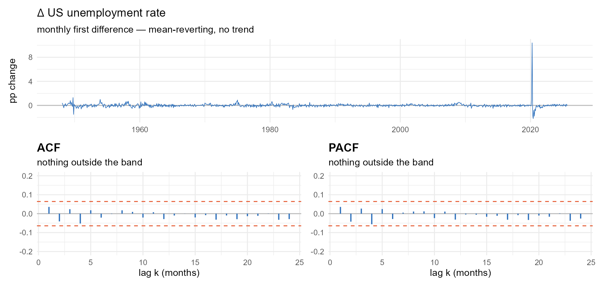
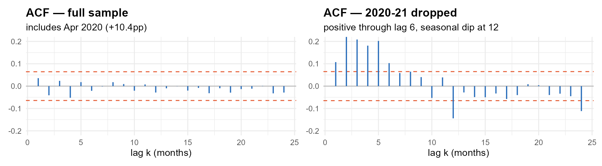

Turning On the Mixing Board
Module 3 · AR(p), MA(q), and the Fingerprints They Leave
Gary Cornwall
Econ 6376 · The George Washington University
Previously · the verdict
What Module 2 settled
A whole session on one question — is this series stationary? — and no one-number answer, because there isn’t one.
- Stationarity is a property of the process, not of the one realization you were handed.
- No single exhibit is conclusive. You build a case.
- When the exhibits conflict, the cost asymmetry breaks the tie. Spurious regression is the wrongful conviction you can’t undo.
Everything today assumes that verdict is already in.

Stationary, precisely
Weak (covariance) stationarity — the three conditions from Module 1:
The third is important: the covariance depends on the separation , never on the date .
Strict stationarity is the stronger version — the entire joint distribution is shift-invariant:
Strict weak, given finite second moments. Not the reverse.
We never need it. Every instrument in this course — the correlogram, the DF regression, both fingerprints we build today — is assembled out of means, variances, and covariances. “Stationary” here always means weakly stationary.
Four exhibits
- The plot. Does it wander off without coming back? Does the spread change? Is there a trend?
- The correlogram. Fast decay stationary. Slow, near-linear decay unit root.
- The tests, in pairs. ADF (: unit root) and KPSS (: stationary) — opposite nulls, so agreement carries information and both failing to reject means the data cannot discriminate.
- The ratio. — a sanity check, not a test.
Hold on to exhibit 2. In Module 2 the correlogram was a yes/no instrument: does this decay fast enough? Today it becomes an identification instrument — and it gets a second barrel.
One case, start to finish
Pick a case, read the four exhibits, then press Difference it until the two tests agree. The ladder on the right records what you found at each level.
is a marker or record, not a definition
- — already stationary. Nothing to do.
- — one difference does it. Most macro series in levels: GDP, employment, prices.
- — two. Occasionally price levels. Rare, and worth double-checking.
You did not look up in a table. is the number of times you had to press the button.
And one press too many is its own diagnosable mistake — that in firebrick. Remember what it looked like. It comes back this later with a name.
Today: the other two letters
Getting right is what makes everything downstream “legal”. But tells you nothing about what kind of series you have once you get there.
Difference a random walk and you get white noise — nothing left to model. Difference a real macro series and you get something stationary that still has structure in it: this quarter still knows something about last quarter.
That leftover structure is and .
Act I · Turning on the board
“Every contact leaves a trace.” Act I — memory of , memory of shocks
The board we’ve been ignoring
Module 1 wrote down the master equation for the whole course:
and then turned almost all of it off. We kept and and studied the AR(1) for two modules. The Dickey–Fuller regression is a rearranged AR(1); even the trend specification only added .
| Term | After Module 2 | After today |
|---|---|---|
| on | on | |
| on (trend ADF) | on | |
| on | on | |
| off | on | |
| off | on | |
| on | on |
After today the only block you haven’t seen is the seasonal one. That’s Module 5.
Two kinds of memory
Both halves of the board are memory devices. They remember different things.
- AR memory is memory of . How many days of my own history matter for today? An AR() remembers the last values of the series; every older shock still reaches the present, but only indirectly, through those ’s.
- MA memory is memory of shocks. How many recent surprises are still rattling around in the system? An MA() carries the last innovations explicitly — and then forgets them.
Your bank balance at the end of day :
- AR() — today’s balance depends on the last days’ balances. Rent, payday, standing orders. The rhythm repeats because your schedule does.
- MA() — today’s balance depends on the last surprises: the tax refund, the car repair, the check from your aunt. Once they wash through, they’re gone.
- Most real series are both.
counts how far back your own history matters. counts how long a surprise survives.
AR(): turning up the rest of the faders
Collect the lags on the left, exactly as we did for the AR(1) in Module 1:
The minus signs in are not a convention chosen to annoy you. They come for free the moment the terms cross the equals sign.
Still for the DGP innovation, still for a residual from something we estimated.
When does an AR() sit still?
The condition. A stationary AR() exists if and only if every root of lies outside the unit circle in the complex plane.
Check it against what you already know. For the AR(1), , one root at . “Outside” means , which is exactly — the Module 1 condition, unchanged.
The trap. Applying to the coefficients one at a time is not the generalization. Every coefficient can be comfortably less than one and the process still non-stationary — you’ll watch it happen two slides from now.
The condition is on the roots of the joint polynomial. Roots are not coefficients.
AR(2): two roots, one quadratic
Substituting turns the lag polynomial into the characteristic equation, where the arithmetic is cleaner and the condition turns inside out:
Stationary and . Same statement as “roots of outside the circle” — the two sets are reciprocals, so the picture just flips. Both conventions are in print; the widget below draws them both.
The discriminant is a one-glance classifier.
| Roots | What the ACF does | |
|---|---|---|
| a real pair | decays smoothly — a mixture of two geometrics | |
| complex conjugates | a damped sine wave — crosses zero, repeatedly |
Stationarity is a separate question, settled by the modulus, not by the sign of the discriminant.
Three examples, on the board
Do the arithmetic with me before anyone touches a preset.
| Verdict | |||
|---|---|---|---|
| stationary, smooth decay | |||
| non-stationary | |||
| , modulus | stationary, oscillating |
Row 1 to row 2 changes one number: from to . Two coefficients, both smaller than one, and a root still walks out of the circle. That is why you check the roots.
The AR fingerprint: it tails off
We won’t derive the ACF of a general AR() — that’s Yule–Walker, and it’s in Enders ch. 2. The pattern is what we need.
- AR(1): . Pure geometric decay. You’ve known this since Module 1.
- AR(2), real roots: a mixture of two geometrics — still smooth.
- AR(2), complex roots: a damped sinusoid — it crosses zero and comes back.
- AR(): one geometric or damped-sine term per root, all added together.
The decay rate belongs to the largest-modulus root. The shape belongs to whether the roots are real or complex.
The ACF of an AR process tails off. It never cuts off.
Half the identification rules in Act III are that one sentence. Here comes the other half.
The other kind of memory
A hurricane closes a refinery on the Gulf coast. Within a week gas prices are up forty cents everywhere east of Texas. Six weeks later the refinery is back online, and so is the price.
That shock didn’t decay. It expired. It had a length — however long it takes to bring capacity back — and then it was over.
Ask an AR(1) the same question. Does a shock ever actually leave?
gets small. It gets unmeasurably small. It is never zero.
AR forgets asymptotically. MA forgets absolutely.
Same shock, two systems
Identical innovations top and bottom, one hurricane at . The ledger beside each series breaks today’s value into its pieces; the firebrick segment is the part still owed to the shock. Before we step it: at which period does the hurricane leave each system?
MA() has a horizon — at the firebrick bar slides off the register and the series has no memory of the hurricane at all. AR(1) has a half-life — the bar shrinks by a factor of every period and never reaches the edge.
MA(): the DGP
In lag-operator form, with :
Look hard at the right-hand side and notice what isn’t there.
There is no on the right. An MA() is built out of nothing but the last shocks.
Every strange and useful property on the next four slides falls out of that one structural fact. The series is a weighted sum of a finite window of noise — so it cannot wander off, and it cannot remember anything older than the window.
Why has plus signs
| Polynomial | Course convention | Where the signs came from |
|---|---|---|
| — AR | the crossed the equals sign | |
| — MA | the never moved |
Enders and Hamilton agree with us. Box, Jenkins and Reinsel write the MA polynomial with minus signs, so their is our . Check the convention before you copy a formula out of a book. notation_dictionary.md is the final word for this course.
Put both polynomials on one line and the whole master equation collapses to:
That is ARMA() — and it is the object Module 4 estimates.
MA() is always stationary
No conditions on the ’s. None. Check the three requirements directly:
The mean is because every innovation has mean zero. The variance moves with the ’s but not with . And counts how many ’s and share — which depends on the separation and never on the date.
| AR() | MA() | |
|---|---|---|
| Stationarity | a condition — roots of outside the circle. You can fail it. | automatic, free, no strings |
| The condition it carries instead | — | invertibility |
Stationarity and invertibility are not the same property. They get conflated every single year. Three slides from now you’ll see why they can’t be the same thing.
Where the cutoff comes from
Two copies of the series, shifted by . Shared columns light up, the products print underneath, and they sum to . Walk up one step at a time and watch the shared columns run out: at the two rows have nothing in common and the sum is empty.
Then flip to — the same diagram built from -weights that never end, so the rows never come apart. One picture has an edge. The other doesn’t. That’s the whole difference.
The algebra, once, by hand
Every term is a product of two different innovations. Nothing is shared, so there is nothing to average. The same argument kills for every .
A free diagnostic — and a problem
Treat as a function of and find its extremes:
For every MA(1), whatever is. So if the sample , the series cannot be a pure MA(1). No test, no critical value, no software — just algebra you did on the last slide.
Now the problem. Feed and into the same formula:
Identical. and produce the same autocorrelation at every lag, so they produce the same correlogram, the same second moments, the same everything we can measure. The data cannot tell them apart.
Invertibility: which do you get to keep?
Two parameter values, one correlogram. Something has to break the tie, and it isn’t the data.
The question invertibility asks. Given the observed history , can we recover the innovations that produced it?
- Yes — the representation is unique, the ’s are identified, and MLE has one peak to climb.
- No — two configurations carry the same likelihood, and MLE either refuses to converge or pins the estimate to the boundary.
The condition. An MA() is invertible every root of lies outside the unit circle.
| Side | Property | Polynomial | Roots |
|---|---|---|---|
| AR | stationarity | outside the circle | |
| MA | invertibility | outside the circle |
Same language, same geometry, different polynomial — and different meaning. The MA is stationary either way; invertibility is about whether you can identify it. Of the reciprocal pair, exactly one is invertible. That’s the one you’re allowed to report.
The mirror, on the board
Same widget, same algebra, one sign flipped: mode asks is it stationary, mode asks is it invertible, and the region turns upside down.
At the readout says : the root sits outside, invertible. Note the ACF — one spike at lag 1, nothing after. Now drag the slider to : the reciprocal , the partner from two slides ago.
The ACF panel doesn’t move. But the root becomes and crosses inside: not invertible. The coefficient and the root have traded places — that is what “reciprocal pair” looks like, and it is the tie being broken in front of you.
The over-differencing trap, finally named
Module 2, differencing a series that only had a trend. Start from :
An MA(1) with . Its polynomial is , and the root of is
Non-invertible. Not “nearly” — on the boundary, by exactly zero margin.
And look where landed two slides ago. It is the precise value that attains : the floor of the bound.
The firebrick spike you were told to remember is the bound being hit — which is also the edge of invertibility.
So pinned at after differencing — with a standard error too good to be true — is the warning light. Two modules ago you took that on faith.
Two ways to write the same dynamics
A finite stationary AR() and a finite invertible MA() are two spellings of the same kind of memory. Each is the infinite-order version of the other.
One direction you already did. Module 1, recursive substitution on the AR(1):
An AR(1) is an MA(). Wold’s theorem says every covariance-stationary process has such a representation.
The other direction is what invertibility buys. Take , so :
, so , — alternating signs, decaying at rate . (The equation above is the rearrangement onto the side, so its coefficients are .) That series converges because the root is outside the circle. That is what invertibility does, operationally.
Check it in R
An MA(1) has one parameter. Fit it a high-order AR anyway and see what comes back.
set.seed(8675309)
y <- arima.sim(n = 5000, list(ma = 0.7))
ar(y, order.max = 8, aic = FALSE, method = "ols")$ar| lag | 1 | 2 | 3 | 4 | 5 |
|---|---|---|---|---|---|
fitted (what ar() returns) |
|||||
| theory |
It won’t be exact — 5000 draws of noise, and the far tail generally sags below theory (lag 5 here runs a little hot) because a fit truncated at 8 lags has to absorb everything past lag 8. But the sign alternation and the decay at are unmistakable, and nobody put them there by hand.
One parameter — — generated that entire row.
Small , small
Why this matters past the algebra:
- A small AR captures dynamics that would need infinitely many MA weights.
- A small invertible MA captures dynamics that would need infinitely many AR weights.
- An ARMA(1,1) — two dynamic parameters — describes behavior a pure AR would need six or eight lags to imitate.
A finite ARMA is a compact code for an infinite-order process.
Three places we cash this in:
- Module 4 model selection is largely the hunt for the most parsimonious of several equivalent representations. AR(5) or ARMA(1,1)? Take the ARMA(1,1) — fewer parameters, less overfitting.
- Forecasting from an MA runs on the AR() form underneath, because forecasts use past observations, not unobserved shocks. Invertibility is what licenses that substitution.
- The ARMA trap in Act III: both representations are effectively infinite-order, so neither correlogram cuts off cleanly. You’ll see it, and it’s why Module 4 needs information criteria.
Act II · The second fingerprint
“Two prints, or it isn’t an identification.” Act II — the PACF
One fingerprint isn’t enough
Run the ACF across the whole family and look at what comes back:
| Process | ACF | Can you read the order off it? |
|---|---|---|
| AR(1) | tails off | no |
| AR(2) | tails off | no |
| AR(5) | tails off | no |
| MA(1) | cuts off at 1 | yes |
| MA(2) | cuts off at 2 | yes |
The ACF is a complete instrument for MA order and a useless one for AR order. It will tell you “this is an AR” and then refuse to say which one.
Look at the shape of that problem. We don’t need a better ACF — we need an instrument that does for AR what the ACF already does for MA: cut off at the order.
That instrument exists, and you already own every piece of it. It’s OLS.
The partial autocorrelation function
The partial autocorrelation at lag , written , is the correlation between and after removing the linear effect of everything in between — .
How much does tell me about that the lags in between haven’t already told me?
The ACF never asks that. is the raw correlation between and , and it happily counts influence that arrived indirectly, passed down through the lags in between.
That is exactly why an AR(1) has a non-zero . There is no term anywhere in the AR(1) equation — but moved , and moved . The correlation is real, and it is entirely second-hand.
The PACF refuses to count second-hand information. That refusal is the whole idea.
The partial-effect interview
You’re predicting whether someone is late to work today.
“Were they late yesterday?” Useful — lateness is persistent. That’s the lag-1 correlation.
“Were they late two days ago?” This also looks useful. But yesterday and two-days-ago are themselves correlated: someone late yesterday was probably late the day before as well. So the honest question is
Does two-days-ago tell me anything beyond what yesterday already told me?
The answer to that question is .
| Process | Does add anything past ? | |
|---|---|---|
| AR(1) | No — only ever reached through | |
| AR(2) | Yes — sits in the DGP with its own coefficient |
Push it out to : an AR() has non-zero partial autocorrelation at lags and exactly zero from onward. There is the cutoff we went looking for.
It really is just OLS
“Remove the linear effect of the intermediate lags” is a phrase you already know how to execute. Regress on them. For lag , run
and keep the coefficient on the deepest lag:
The sample PACF out to lag is regressions, each one lag deeper than the last, reading the bottom coefficient off each.
Why software doesn’t do it that way. separate regressions is wasteful, so pacf() pushes the Yule–Walker equations through the Durbin–Levinson recursion and gets the same numbers far faster. We won’t need that machinery — Enders ch. 2 p. 65 has it if you want it.
Keep the regression definition in your head anyway. It’s the one that explains what the number means.
Build it by hand
set.seed(8675309)
y <- arima.sim(n = 500, list(ar = c(0.6, -0.3))) # an AR(2)
y_t <- y[5:500]; y_lag1 <- y[4:499]; y_lag2 <- y[3:498]
y_lag3 <- y[2:497]; y_lag4 <- y[1:496]
phi_11 <- coef(lm(y_t ~ y_lag1))[2]
phi_22 <- coef(lm(y_t ~ y_lag1 + y_lag2))[3]
phi_33 <- coef(lm(y_t ~ y_lag1 + y_lag2 + y_lag3))[4]
phi_44 <- coef(lm(y_t ~ y_lag1 + y_lag2 + y_lag3 + y_lag4))[5]
c(phi_11, phi_22, phi_33, phi_44)
pacf(y, lag.max = 4, plot = FALSE) # should matchfour lm() calls |
||||
pacf() |
Agreement to the third decimal; the small gap is pacf() lining up the start of the sample a little differently. And lags 3 and 4 sit inside the band. The cutoff isn’t a metaphor — it’s two numbers that stopped mattering.
What those numbers actually are
The DGP was , . Look at what came back.
The PACF at the final lag estimates the AR coefficient at that lag. Not a coincidence: at the regression you are running is the AR() model, so its deepest coefficient is .
Now the one that catches people every year:
is the lag-1 coefficient with nothing controlled for, so it is just — and for an AR(2),
— and the sample came back at . is exactly, by construction; the is the population value it estimates. only when the process really is an AR(1). The PACF hands you the model’s deepest coefficient, not its first.
Both fingerprints, side by side
AR(1): the ACF tails away, the PACF has one spike. AR(2) real: the ACF still tails, the PACF has two. The PACF is counting for you. Now press MA(1) and watch the two panels trade jobs.
Why the MA side tails off
The PACF of an MA() does not cut off. It decays — geometrically, sometimes oscillating.
You already know why. We inverted an MA(1) a few slides ago:
An invertible MA() is an AR(). The PACF asks “does lag add anything new?”, and the AR() representation keeps answering yes, a little — at every lag, forever, the amount shrinking geometrically.
There is no finite at which the answer becomes exactly no, because there is no finite at which becomes exactly zero.
The duality isn’t a curiosity. It’s the reason the second fingerprint works at all.
The mirror
| ACF | PACF | |
|---|---|---|
| AR() | tails off | cuts off at |
| MA() | cuts off at | tails off |
Read it in either direction and it’s the same sentence. An AR is finite in its own lags and infinite in shocks, so it cuts in the PACF and tails in the ACF. An MA is finite in shocks and infinite in its own lags, so it does exactly the reverse.
Two instruments, and between them they pin down both orders — as long as the process is pure.
Which raises the obvious question. What does an ARMA() — finite in neither direction — do to this table?
That’s Act III.
Act III · The lineup
“No print is readable until the surface holds still.” Act III — identification
Before you read a print
You asked what an ARMA does to the table. Before we answer that — a prerequisite.
Every fingerprint in this module was computed on a stationary series. That was not a convenience. is only well defined if the covariance depends on the gap and nothing else, so on a non-stationary series the ACF is not a memory measurement at all.
The order of operations, for the rest of the course:
- Verdict first. Plot it, correlogram it, ADF and KPSS it — Module 2’s whole apparatus.
- Difference until stationary. That count is . Not one more — Act I showed you what over-differencing costs ().
- Only now read the ACF and the PACF, on the stationary series.
- Where the two prints disagree or both smear, Module 4 arbitrates.
Identify first, then and . Never the other way round.
Step 1, on the board
Before you press anything: barely any decay. Enormous memory — or a series that isn’t ready to be read? Press Difference it once and watch the verdict flip.
A near-1 ACF at every lag is a question you haven’t answered yet, not a long-memory AR.
The lineup
Three suspects. Two instruments. One table for the rest of the course.
| Process | ACF | PACF |
|---|---|---|
| AR() | tails off | cuts off at lag |
| MA() | cuts off at lag | tails off |
| ARMA() | tails off | tails off |
The pure cases each announce themselves with a sharp cutoff in exactly one panel. That cutoff is the order.
The third row is the honest one. An ARMA is finite in neither direction, so both prints smear and neither reads out a number. You can tell that it is an ARMA — that is genuine information — but you cannot read and off the picture.
Row three is why Module 4 exists.
The gallery
Same , same seed, six processes. Call the row before I press the button.
Watch AR(2) cplx especially — the ACF oscillates on the way down. Still tailing off, still two PACF spikes. Decaying does not mean monotone.
Where the cutoff stops being sharp
The table is a statement about the population. You never have the population.
Go back to the gallery and drag from 500 down toward 60. Two things happen at once:
- The Bartlett bands widen as — at that is .
- The sample autocorrelations get noisier, so lags past the true cutoff start poking out.
A “cutoff” is a spike outside the band followed by spikes inside it. Widen the band and blur the spikes and an MA(2) can read as an MA(1), or as an ARMA, or as nothing at all.
The fingerprint is evidence, not a confession.
Pushing it until it breaks
Everything so far shows what the theory promises. Now push it to the edge and watch where it gives.
Take an MA(1) at . On paper this is still entirely legal:
The root sits outside the unit circle, so the process is invertible and every result from Act I applies. But is barely outside — and is the over-differencing root.
Meanwhile , sitting right on the ceiling. Legal, and one nudge from not being.
Still legal, on the board
The slider stops at ; this instance starts past the end of it on purpose.
Read the ACF. That is a clean MA(1) cutoff — one big negative spike, then nothing.
The correlogram doesn’t warn you
And it reads fine on the numbers too: , lags 2–6 all inside the Bartlett band. Identification succeeds. Then you try to estimate it:
| s.e. | true | ||
|---|---|---|---|
| MA(1), | recovered | ||
| MA(1), | pegged |
MLE slid onto the invertibility boundary and stopped — and then reported a standard error of , which is confidence, not accuracy. is the over-differencing signature from Act I, arriving here from a completely different direction.
The ACF said MA(1) and was right. The estimator failed anyway.
Blind draw
// revealTruth stays default: the "Blind draw" button does the hiding itself, and
// pre-hiding leaves an empty control row that pushes the slide past its height.
makeFingerprint({ phi0: [0, 0], theta0: [0, 0], T0: 500 })Press Blind draw. Commit out loud before anyone reveals: which panel cuts off — ACF, PACF, neither — and at what lag?
That answer is the row, and the lag is the order. Again until the room is faster than I am.
Act IV · Back to the case file
“Real evidence is never as clean as the training slides.” Act IV — UNRATE, continued
The series we left in Module 2

Module 2 ruled UNRATE , so we difference once and read the print. Call it before I do: AR, MA, ARMA — what order?
Nothing.
Not one autocorrelation out of twenty-four clears the band. , and the Bartlett band is .
Read literally, UNRATE is white noise — no AR, no MA, nothing to model. That should bother you. Unemployment does not turn on a coin flip.
So before believing a blank correlogram, look back at the series, not the bars. There is a single vertical spike in April 2020 — a +10.4 point move in one month.
One month ate the correlogram

That one observation nearly doubles the sample standard deviation, . Every is a covariance over that variance, so inflating the denominator crushes the whole correlogram toward zero.
The honest verdict
Drop the 2020–21 window and the print comes back: 8 of 24 ACF lags clear the band.
| reads | |
|---|---|
| ACF | positive and significant through lag 6, peak at lag 2 — tails off |
| PACF | significant through lag 5 with scattered hits out to 24, peak at lag 2 — tails off |
| both | a clean negative dip at lag 12 |
Neither panel cuts off, so by the lineup table this is an ARMA — plus something annual that our table has no row for. First guess: a low-order ARMA with a seasonal term.
The table got us to a defensible guess, not to an answer.
What you can do now
- AR() is memory of ; stationarity needs every root of outside the unit circle. ACF tails, PACF cuts at .
- MA() is memory of shocks; always stationary, invertible when ’s roots are outside. ACF cuts at , PACF tails.
- They are the same object from two directions — a stationary AR is an MA(), an invertible MA is an AR(). That duality is why the second fingerprint works.
- The PACF is the OLS coefficient on the deepest lag; it counts for you.
- The lineup: tails/cuts, cuts/tails, tails/tails.
- A fingerprint is evidence, not a confession — small blurs it, one outlier can erase it, and means the estimator is in trouble.
Next time
Row three of the table is unfinished business, and so is everything we just guessed at:
- Information criteria. When both correlograms tail off, AIC and BIC arbitrate — stop eyeballing, start scoring candidate pairs.
- Estimation, properly. What
arima()was actually doing when it pegged at . - Then Module 5 takes the lag-12 dip seriously: seasonality and SARIMA.
You can now write down the models. Next: how to pick one.
Machinery
Defined on a visible slide — a visibility="hidden" section is dropped from the DOM and the factory ends up undefined. OJS is reactive, so the calls above resolve regardless of source order.
// Unique-id generator in its OWN cell: a factory may not reference its own name
// (that is a circular definition in OJS), and the clipPath needs a unique id.
nextUid = (function () { let n = 0; return () => ++n; })()// ---------------------------------------------------------------------------
// fpk — the shared numerical kernel for Module 3.
// One cell, not copy-pasted per widget (Module 2's four widgets each carry their
// own copy of the estimators; within a single deck OJS is reactive and a shared
// cell is safe). Nothing here references `fpk`, so no circular definition.
// ---------------------------------------------------------------------------
fpk = (function () {
const mulberry32 = a => () => {
a |= 0; a = a + 0x6D2B79F5 | 0;
let t = Math.imul(a ^ a >>> 15, 1 | a);
t = t + Math.imul(t ^ t >>> 7, 61 | t) ^ t;
return ((t ^ t >>> 14) >>> 0) / 4294967296;
};
const hashSeed = a => {
a = a >>> 0;
a = Math.imul(a ^ (a >>> 16), 2246822507);
a = Math.imul(a ^ (a >>> 13), 3266489909);
return (a ^ (a >>> 16)) >>> 0;
};
const normF = rng => () => {
let u = 0, v = 0;
while (u === 0) u = rng();
while (v === 0) v = rng();
return Math.sqrt(-2 * Math.log(u)) * Math.cos(2 * Math.PI * v);
};
// Course sign convention: y_t = a + sum(phi_j y_{t-j}) + sum(theta_l eps_{t-l}) + eps_t.
// (eps = the DGP innovation. The dictionary reserves e_t for residuals.)
// Same semantics as helpers/simulators.R::arma_simulator().
function simARMA(phi, theta, T, seed, sigma, burn) {
sigma = (sigma == null) ? 1 : sigma;
burn = (burn == null) ? 300 : burn;
const nrm = normF(mulberry32(hashSeed(seed)));
const p = phi.length, q = theta.length, n = T + burn;
const eps = new Float64Array(n), y = new Float64Array(n);
for (let t = 0; t < n; t++) eps[t] = sigma * nrm();
for (let t = 0; t < n; t++) {
let v = eps[t];
for (let i = 1; i <= p; i++) if (t - i >= 0) v += phi[i - 1] * y[t - i];
for (let j = 1; j <= q; j++) if (t - j >= 0) v += theta[j - 1] * eps[t - j];
y[t] = v;
}
return y.slice(burn);
}
// Sample ACF, divisor T (biased) — matches stats::acf().
function sampleACF(y, K) {
const T = y.length;
let m = 0; for (let i = 0; i < T; i++) m += y[i]; m /= T;
const g = new Float64Array(K + 1);
for (let k = 0; k <= K; k++) {
let s = 0;
for (let t = k; t < T; t++) s += (y[t] - m) * (y[t - k] - m);
g[k] = s / T;
}
const r = new Float64Array(K + 1);
for (let k = 0; k <= K; k++) r[k] = g[0] === 0 ? 0 : g[k] / g[0];
return r;
}
// Durbin-Levinson: PACF from an ACF. This is what stats::pacf() runs internally,
// so feeding it a sample ACF reproduces pacf(), and feeding it a theoretical ACF
// gives the population PACF.
function pacfDL(r, K) {
const pac = new Float64Array(K + 1);
let prev = new Float64Array(K + 2), cur = new Float64Array(K + 2);
if (K >= 1) { pac[1] = r[1]; prev[1] = r[1]; }
for (let k = 2; k <= K; k++) {
let num = r[k], den = 1;
for (let j = 1; j <= k - 1; j++) { num -= prev[j] * r[k - j]; den -= prev[j] * r[j]; }
const pk = (den === 0) ? 0 : num / den;
pac[k] = pk;
for (let j = 1; j <= k - 1; j++) cur[j] = prev[j] - pk * prev[k - j];
cur[k] = pk;
const tmp = prev; prev = cur; cur = tmp;
}
return pac;
}
// Theoretical ACF of an ARMA(p,q) via psi-weights:
// psi_0 = 1, psi_j = theta_j + sum_i phi_i psi_{j-i}
// gamma_k = sum_j psi_j psi_{j+k}
// Returns null if the AR side is explosive (psi diverges).
function theoACF(phi, theta, K, J) {
J = J || 1500;
const p = phi.length, q = theta.length, N = J + K + 1;
const psi = new Float64Array(N);
psi[0] = 1;
for (let j = 1; j < N; j++) {
let v = (j <= q) ? theta[j - 1] : 0;
const lim = Math.min(j, p);
for (let i = 1; i <= lim; i++) v += phi[i - 1] * psi[j - i];
psi[j] = v;
if (!isFinite(v) || Math.abs(v) > 1e100) return null;
}
const g = new Float64Array(K + 1);
for (let k = 0; k <= K; k++) {
let s = 0;
for (let j = 0; j + k < N; j++) s += psi[j] * psi[j + k];
g[k] = s;
}
if (!isFinite(g[0]) || g[0] === 0) return null;
const r = new Float64Array(K + 1);
for (let k = 0; k <= K; k++) r[k] = g[k] / g[0];
return r;
}
// AR(2) stationarity triangle. Also correct for AR(1) with phi2 = 0.
function arStationary(phi) {
const p1 = phi[0] || 0, p2 = phi[1] || 0;
if (p2 === 0) return Math.abs(p1) < 1;
return (p1 + p2 < 1) && (p2 - p1 < 1) && (Math.abs(p2) < 1);
}
// Trailing order: highest index with a non-zero coefficient.
const order = v => { let o = 0; for (let i = 0; i < v.length; i++) if (v[i] !== 0) o = i + 1; return o; };
// Inverse roots of a second-order lag polynomial — the roots of z^2 + bz + c.
// AR: Phi(L) = 1 - phi1 L - phi2 L^2 -> b = -phi1, c = -phi2
// MA: Theta(L) = 1 + th1 L + th2 L^2 -> b = th1, c = th2
// These are the companion-matrix eigenvalues. The roots of the polynomial in L
// are their reciprocals — which is exactly why the textbook condition reads
// |z| > 1 while every line of code ever written for this reads |lambda| < 1.
function quadInv(b, c) {
const D = b * b - 4 * c;
if (D >= 0) {
const s = Math.sqrt(D);
return { cplx: false, D, l: [{ re: (-b + s) / 2, im: 0 }, { re: (-b - s) / 2, im: 0 }] };
}
const s = Math.sqrt(-D);
return { cplx: true, D, l: [{ re: -b / 2, im: s / 2 }, { re: -b / 2, im: -s / 2 }] };
}
const cmod = z => Math.hypot(z.re, z.im);
const cinv = z => { const d = z.re * z.re + z.im * z.im; return { re: z.re / d, im: -z.im / d }; };
// The inverse of quadInv: rebuild the coefficients from a pair of inverse
// roots. Used to drag the roots around directly (scale both by a common factor
// and the process walks radially toward or away from the unit circle).
function coefFromInv(l, ar) {
const sum = l[0].re + l[1].re; // conjugates: imag cancels
const prod = l[0].re * l[1].re - l[0].im * l[1].im; // = |lambda|^2 if complex
return ar ? [sum, -prod] : [-sum, prod];
}
return { mulberry32, hashSeed, normF, simARMA, sampleACF, pacfDL, theoACF, arStationary,
order, quadInv, cmod, cinv, coefFromInv };
})()// ---------------------------------------------------------------------------
// ek — the testing kernel: OLS, ADF, MacKinnon CVs, KPSS.
//
// Lifted VERBATIM from module_02_revealjs/module_02_slides.qmd (matInv,
// tStatLast, dfStat, mkCV, detrendResid, kpss) and node-validated there against
// textbook DF critical values and KPSS moments. Copied rather than reimplemented
// on purpose: a student who saw tau = -2.31 in Module 2 must see -2.31 here, and
// the fastest way to guarantee that is the same arithmetic, character for
// character. If these ever need fixing, fix both.
// ---------------------------------------------------------------------------
ek = (function () {
function matInv(A) { const n = A.length; const M = A.map((row, i) => row.concat(Array.from({ length: n }, (_, j) => i === j ? 1 : 0)));
for (let col = 0; col < n; col++) { let piv = col; for (let r = col + 1; r < n; r++) if (Math.abs(M[r][col]) > Math.abs(M[piv][col])) piv = r;
const tmp = M[col]; M[col] = M[piv]; M[piv] = tmp; const d = M[col][col]; for (let j = 0; j < 2 * n; j++) M[col][j] /= d;
for (let r = 0; r < n; r++) { if (r === col) continue; const f = M[r][col]; for (let j = 0; j < 2 * n; j++) M[r][j] -= f * M[col][j]; } } return M.map(row => row.slice(n)); }
function tStatLast(cols, y) { const p = cols.length, n = y.length; const XtX = Array.from({ length: p }, () => new Array(p).fill(0)); const Xty = new Array(p).fill(0);
for (let i = 0; i < p; i++) { for (let j = i; j < p; j++) { let s = 0; for (let k = 0; k < n; k++) s += cols[i][k] * cols[j][k]; XtX[i][j] = s; XtX[j][i] = s; } let s2 = 0; for (let k = 0; k < n; k++) s2 += cols[i][k] * y[k]; Xty[i] = s2; }
const inv = matInv(XtX); const beta = new Array(p).fill(0); for (let i = 0; i < p; i++) { let s = 0; for (let j = 0; j < p; j++) s += inv[i][j] * Xty[j]; beta[i] = s; }
let sse = 0; for (let k = 0; k < n; k++) { let yh = 0; for (let i = 0; i < p; i++) yh += beta[i] * cols[i][k]; const e = y[k] - yh; sse += e * e; } const s2 = sse / (n - p); return beta[p - 1] / Math.sqrt(s2 * inv[p - 1][p - 1]); }
function dfStat(y, spec) { const T = y.length, n = T - 1; const dy = new Float64Array(n), ylag = new Float64Array(n); for (let i = 0; i < n; i++) { dy[i] = y[i + 1] - y[i]; ylag[i] = y[i]; }
let cols; if (spec === 'drift') { const one = new Float64Array(n).fill(1); cols = [one, ylag]; }
else { const one = new Float64Array(n).fill(1); const tt = new Float64Array(n); for (let i = 0; i < n; i++) tt[i] = i + 1; cols = [one, tt, ylag]; } return tStatLast(cols, dy); }
function mkCV(spec, T) { return spec === 'trend' ? -3.41049 - 4.039 / T - 17.83 / (T * T) : -2.86154 - 2.8903 / T - 4.234 / (T * T) - 40.04 / (T * T * T); }
function detrendResid(y, spec) { const T = y.length;
if (spec === 'level') { let m = 0; for (let t = 0; t < T; t++) m += y[t]; m /= T; const e = new Float64Array(T); for (let t = 0; t < T; t++) e[t] = y[t] - m; return e; }
let s1 = T, st = 0, stt = 0, sy = 0, sty = 0; for (let t = 0; t < T; t++) { const x = t + 1; st += x; stt += x * x; sy += y[t]; sty += x * y[t]; }
const det = s1 * stt - st * st, a = (stt * sy - st * sty) / det, b = (s1 * sty - st * sy) / det; const e = new Float64Array(T); for (let t = 0; t < T; t++) e[t] = y[t] - (a + b * (t + 1)); return e; }
function kpss(y, spec) { const T = y.length, e = detrendResid(y, spec); const S = new Float64Array(T); let run = 0; for (let t = 0; t < T; t++) { run += e[t]; S[t] = run; } let sumS2 = 0; for (let t = 0; t < T; t++) sumS2 += S[t] * S[t];
const l = Math.floor(4 * Math.pow(T / 100, 0.25)); let g0 = 0; for (let t = 0; t < T; t++) g0 += e[t] * e[t]; g0 /= T; let lrv = g0;
for (let j = 1; j <= l; j++) { let gj = 0; for (let t = j; t < T; t++) gj += e[t] * e[t - j]; gj /= T; lrv += 2 * (1 - j / (l + 1)) * gj; } return sumS2 / (T * T * lrv); }
const KPSS_CV = { level: 0.463, trend: 0.146 }; // 5%, Kwiatkowski et al. (1992)
// Module 2's 2x2, same four names so the language carries over.
function classify(y, aSpec, kSpec) {
const T = y.length;
const tau = dfStat(y, aSpec), cv = mkCV(aSpec, T);
const eta = kpss(y, kSpec), kcv = KPSS_CV[kSpec];
const adfRej = tau < cv, kpssRej = eta > kcv;
const cell = adfRej && !kpssRej ? "stat" : !adfRej && kpssRej ? "unit"
: adfRej && kpssRej ? "conflict" : "unknown";
return { tau, cv, eta, kcv, adfRej, kpssRej, cell, aSpec, kSpec };
}
return { matInv, tStatLast, dfStat, mkCV, detrendResid, kpss, KPSS_CV, classify };
})()// ---------------------------------------------------------------------------
// makeEvidence — the evidence dashboard. Stationarity recap from Module 2, but
// arranged so that d stops being a symbol and becomes a button you press.
//
// The ladder on the right is the whole idea: it records the verdict at each
// level of differencing as you visit it, so "y ~ I(1)" ends up being a *log of
// what happened* rather than a definition to memorise. You reach I(1) by finding
// that y fails and Delta-y passes, which is exactly what the notation means.
//
// Two traps are deliberate. Press "Difference it" once too often and the lag-1
// autocorrelation goes to about -0.5 in firebrick — the same spike that comes
// back later as the non-invertible MA(1) with theta = -1. And the
// trend-stationary case cannot be fixed by differencing at all, which is
// Module 2's detrend-vs-difference lesson showing up unannounced.
// ---------------------------------------------------------------------------
makeEvidence = function (opts) {
const o = Object.assign({ kind0: "rw", T0: 200, seed0: 8675309, K: 18,
d0: 0, revealTruth: false }, opts || {});
let kind = o.kind0, T = o.T0, seed = o.seed0, d = o.d0, revealTruth = o.revealTruth;
const K = o.K, DMAX = 3;
// visited[k] = the cell we saw at d = k, or null if never pressed that far.
let visited = new Array(DMAX + 1).fill(null);
// `phi` is the AR coefficient of the series once it IS stationary (at d =
// truth). It sets how loud over-differencing sounds: rho_1 of one difference
// too many is exactly -(1-phi)/2, verified in verify_kernel.js.
const CASES = [
{ k: "wn", lab: "white noise", truth: 0, phi: 0, trend: false, dgp: "yₜ = εₜ" },
{ k: "ar7", lab: "AR(1) φ=0.7", truth: 0, phi: 0.7, trend: false, dgp: "yₜ = 0.7yₜ₋₁ + εₜ" },
{ k: "ar95", lab: "AR(1) φ=0.95", truth: 0, phi: 0.95, trend: false, dgp: "yₜ = 0.95yₜ₋₁ + εₜ" },
{ k: "rw", lab: "random walk", truth: 1, phi: 0, trend: false, dgp: "yₜ = yₜ₋₁ + εₜ" },
{ k: "rwd", lab: "RW + drift", truth: 1, phi: 0, trend: true, dgp: "yₜ = 0.25 + yₜ₋₁ + εₜ" },
{ k: "trend", lab: "trend + noise", truth: 0, phi: 0.5, trend: true, dgp: "yₜ = 0.08t + uₜ, uₜ = 0.5uₜ₋₁ + εₜ" },
{ k: "i2", lab: "I(2)", truth: 2, phi: 0, trend: false, dgp: "Δ²yₜ = εₜ" }
];
const CASE = () => CASES.find(c => c.k === kind);
const CNAME = { stat: "STATIONARY", unit: "UNIT ROOT", conflict: "CONFLICT", unknown: "I DON'T KNOW" };
const root = document.createElement("div");
root.className = "widget";
root.innerHTML = `
<div class="card">
<div class="wbar">
<div class="grp" data-r="cases"></div><div class="sep"></div>
<div class="grp" data-r="sliders"></div><div class="sep"></div>
<div class="grp" data-r="buttons"></div>
</div>
<div class="ev-row">
<div>
<svg data-r="series" width="1120" height="200" viewBox="0 0 1120 200"></svg>
<svg data-r="acf" width="1120" height="205" viewBox="0 0 1120 205"></svg>
</div>
<div>
<div class="ev-stamp" data-r="stamp"></div>
<div class="ev-card" data-r="adfCard">
<div class="ev-hd"><span class="ev-name" data-r="adfName"></span>
<span class="ev-num" data-r="adfNum"></span></div>
<div class="ev-note" data-r="adfNote"></div>
</div>
<div class="ev-card" data-r="kpssCard">
<div class="ev-hd"><span class="ev-name" data-r="kpssName"></span>
<span class="ev-num" data-r="kpssNum"></span></div>
<div class="ev-note" data-r="kpssNote"></div>
</div>
<div class="ev-card">
<div class="ev-name" style="margin-bottom:0.3rem">the I(d) ladder</div>
<div data-r="ladder"></div>
</div>
</div>
</div>
<div class="eqline" data-r="l1"></div>
</div>`;
const q = s => root.querySelector(`[data-r="${s}"]`);
const NS = "http://www.w3.org/2000/svg";
const el = (n, a) => { const e = document.createElementNS(NS, n); for (const k in a) e.setAttribute(k, a[k]); return e; };
const cssVar = n => getComputedStyle(document.documentElement).getPropertyValue(n).trim();
const clear = s => { while (s.firstChild) s.removeChild(s.firstChild); };
const txt = (svg, x, y, s, size, fill, anchor, extra) => {
const e = el("text", Object.assign({ x, y, "font-size": size, fill,
"text-anchor": anchor || "start" }, extra || {}));
e.textContent = s; svg.appendChild(e); return e;
};
const DLAB = k => k === 0 ? "y" : k === 1 ? "Δy" : "Δ" + "²³"[k - 2] + "y";
// ---- data --------------------------------------------------------------
function gen() {
const nrm = fpk.normF(fpk.mulberry32(fpk.hashSeed(seed)));
const n = T + DMAX, y = new Float64Array(n);
// Extra DMAX observations up front so differencing never shortens the
// plotted window — otherwise the series visibly shrinks each press and it
// looks like the button is deleting data.
if (kind === "wn" || kind === "ar7" || kind === "ar95") {
const phi = kind === "wn" ? 0 : kind === "ar7" ? 0.7 : 0.95;
let u = 0;
for (let t = 0; t < 300; t++) u = phi * u + nrm();
for (let t = 0; t < n; t++) { u = phi * u + nrm(); y[t] = u; }
} else if (kind === "rw" || kind === "rwd") {
const mu = kind === "rwd" ? 0.25 : 0;
let u = 0;
for (let t = 0; t < n; t++) { u += mu + nrm(); y[t] = u; }
} else if (kind === "trend") {
let u = 0;
for (let t = 0; t < 300; t++) u = 0.5 * u + nrm();
for (let t = 0; t < n; t++) { u = 0.5 * u + nrm(); y[t] = 0.08 * (t + 1) + u; }
} else {
let u = 0, v = 0;
for (let t = 0; t < n; t++) { u += nrm(); v += u; y[t] = v; }
}
return y;
}
const diffN = (y, k) => {
let v = y;
for (let i = 0; i < k; i++) {
const w = new Float64Array(v.length - 1);
for (let t = 1; t < v.length; t++) w[t - 1] = v[t] - v[t - 1];
v = w;
}
return v.slice(v.length - T); // keep the window length fixed
};
// Spec choice: a trend regressor only earns its place while a deterministic
// trend could still be there. One difference removes it, so drop to drift.
const specs = () => (d === 0 && CASE().trend)
? { a: "trend", k: "trend" } : { a: "drift", k: "level" };
// ---- controls ----------------------------------------------------------
const mkBtn = (host, label, on, fn) => {
const b = document.createElement("button");
b.className = "btn" + (on ? " on" : ""); b.innerHTML = label;
b.onclick = () => fn(b); q(host).appendChild(b); return b;
};
const caseBtns = CASES.map(c => mkBtn("cases", c.lab, c.k === kind, () => {
kind = c.k; d = 0; visited = new Array(DMAX + 1).fill(null);
caseBtns.forEach((b, i) => b.classList.toggle("on", CASES[i].k === kind));
render();
}));
const mkRange = (label, mn, mx, st, val, onin) => {
const w = document.createElement("label"); w.className = "ctl";
const s = document.createElement("span"); s.innerHTML = label;
const i = document.createElement("input");
i.type = "range"; i.min = mn; i.max = mx; i.step = st; i.value = val;
const out = document.createElement("span"); out.className = "cval";
i.oninput = () => { onin(+i.value); render(); };
w.append(s, i, out); q("sliders").appendChild(w);
return { w, i, o: out };
};
const cT = mkRange("T", 60, 600, 20, T, v => {
T = v; visited = new Array(DMAX + 1).fill(null); visited[d] = undefined;
});
const bDiff = mkBtn("buttons", "Difference it →", false, () => {
if (d < DMAX) { d++; render(); }
});
const bUndo = mkBtn("buttons", "← Undo", false, () => {
if (d > 0) { d--; render(); }
});
mkBtn("buttons", "⟲ Reset", false, () => {
d = 0; visited = new Array(DMAX + 1).fill(null); render();
});
mkBtn("buttons", "New draw", false, () => {
seed = (seed * 1103515245 + 12345) >>> 0;
visited = new Array(DMAX + 1).fill(null); render();
});
const bTruth = mkBtn("buttons", "Reveal truth", revealTruth, b => {
revealTruth = !revealTruth; b.classList.toggle("on", revealTruth); render();
});
// ---- drawing -----------------------------------------------------------
function renderSeries(svg, y, title) {
const vb = svg.viewBox.baseVal, W = vb.width, H = vb.height;
const mL = 56, mR = 16, mT = 24, mB = 22;
clear(svg);
const c = { muted: cssVar('--muted'), soft: cssVar('--line-soft'), line: cssVar('--line'),
ink: cssVar('--ink'), tr: cssVar('--true') };
let lo = Infinity, hi = -Infinity;
for (const v of y) { if (v < lo) lo = v; if (v > hi) hi = v; }
const pad = (hi - lo) * 0.1 || 1; lo -= pad; hi += pad;
const sx = i => mL + i / (y.length - 1) * (W - mL - mR);
const sy = v => mT + (hi - v) / (hi - lo) * (H - mT - mB);
svg.appendChild(el("line", { x1: mL, x2: W - mR, y1: sy(0), y2: sy(0), stroke: c.soft }));
let p = "";
for (let i = 0; i < y.length; i++) p += (i ? "L" : "M") + sx(i).toFixed(1) + " " + sy(y[i]).toFixed(1) + " ";
svg.appendChild(el("path", { d: p, fill: "none", stroke: c.tr, "stroke-width": 1.6 }));
txt(svg, mL, 20, title, 21, c.ink);
txt(svg, W - mR, 20, `T = ${y.length}`, 17, c.muted, "end");
[lo + pad, hi - pad].forEach(v => txt(svg, mL - 7, sy(v) + 4, v.toFixed(1), 14, c.muted, "end"));
}
function renderACF(svg, r, band, over) {
const vb = svg.viewBox.baseVal, W = vb.width, H = vb.height;
// mT clears the panel title: the "1" tick sits at sy(1) = mT, and at the
// larger type it was crowding "correlogram" on the line above.
const mL = 56, mR = 16, mT = 32, mB = 28;
clear(svg);
const c = { muted: cssVar('--muted'), soft: cssVar('--line-soft'), line: cssVar('--line'),
ink: cssVar('--ink'), ma: cssVar('--ma'), ur: cssVar('--unitroot'),
band: cssVar('--band') };
const sy = v => mT + (1 - v) / 2 * (H - mT - mB);
const slot = (W - mL - mR) / (K + 1);
const sx = k => mL + slot * (k + 0.5);
svg.appendChild(el("rect", { x: mL, y: sy(band), width: W - mL - mR,
height: sy(-band) - sy(band), fill: c.band, opacity: 0.16 }));
svg.appendChild(el("line", { x1: mL, x2: W - mR, y1: sy(0), y2: sy(0), stroke: c.line }));
[-1, 1].forEach(v => txt(svg, mL - 7, sy(v) + 4, String(v), 14, c.muted, "end"));
for (let k = 1; k <= K; k++) {
// The lag-1 bar is the tell for over-differencing, so it gets its own colour.
const hot = over && k === 1;
svg.appendChild(el("line", { x1: sx(k), x2: sx(k), y1: sy(0), y2: sy(r[k]),
stroke: hot ? c.ur : c.ma, "stroke-width": Math.min(13, slot * 0.4),
"stroke-linecap": "butt" }));
}
for (let k = 1; k <= K; k++) if (k === 1 || k % 5 === 0) txt(svg, sx(k), H - 9, String(k), 14, c.muted, "middle");
txt(svg, mL, 20, "correlogram", 21, c.ink);
txt(svg, W - mR, 20, `Bartlett ±${band.toFixed(2)}`, 17, c.muted, "end");
}
// ---- render ------------------------------------------------------------
function render() {
cT.o.textContent = T;
bDiff.disabled = d >= DMAX;
bUndo.disabled = d <= 0;
const base = gen();
const y = diffN(base, d);
const sp = specs();
const V = ek.classify(y, sp.a, sp.k);
const r = fpk.sampleACF(y, K);
const band = 1.96 / Math.sqrt(y.length);
// Over-differencing is read off the KNOWN truth, not off a threshold on
// rho_1. A threshold would be a lie here: rho_1 of one difference too many
// is -(1-phi)/2, so it is -0.50 for white noise but only -0.02 when phi =
// 0.95 — invisible in a Bartlett band. The widget generated the data and
// knows the answer; pretending otherwise would teach a detector that
// silently fails in precisely the case that matters.
const c = CASE();
const over = d > c.truth;
visited[d] = over ? "over" : V.cell;
// Back-fill every rung below the current one. You cannot be standing on
// Delta-squared-y without having gone through y and Delta-y, so a ladder
// reading "not tested" above the current rung would be lying about the
// route. Matters when opts.d0 drops you partway up.
for (let k = 0; k < d; k++) {
if (visited[k] != null) continue;
const yk = diffN(base, k);
const spk = (k === 0 && c.trend) ? { a: "trend", k: "trend" } : { a: "drift", k: "level" };
visited[k] = k > c.truth ? "over" : ek.classify(yk, spk.a, spk.k).cell;
}
renderSeries(q("series"), y, DLAB(d) + (d ? ` — ${d} difference${d > 1 ? "s" : ""} applied` : ""));
renderACF(q("acf"), r, band, over);
// The null goes in the note, not the header: at the larger type the header
// wrapped to two lines and the two cards stopped lining up.
q("adfName").textContent = `ADF · ${sp.a}`;
q("adfNum").innerHTML = `τ = <b>${V.tau.toFixed(2)}</b> cv₅ = ${V.cv.toFixed(2)}`;
q("adfCard").className = "ev-card" + (V.adfRej ? " hit" : "");
q("adfNote").innerHTML = `H₀: unit root. ` + (V.adfRej
? `τ is below cv₅ → <b>reject</b>. Evidence against a unit root.`
: `τ is above cv₅ → <b>fail to reject</b>. Cannot rule one out.`);
q("kpssName").textContent = `KPSS · ${sp.k}`;
q("kpssNum").innerHTML = `η = <b>${V.eta.toFixed(3)}</b> cv₅ = ${V.kcv.toFixed(3)}`;
q("kpssCard").className = "ev-card" + (!V.kpssRej ? " hit" : "");
q("kpssNote").innerHTML = `H₀: stationary. ` + (V.kpssRej
? `η is above cv₅ → <b>reject</b>. Evidence against stationarity.`
: `η is below cv₅ → <b>fail to reject</b>. Consistent with stationarity.`);
// The ladder: one rung per level, filled in only where you have actually been.
const COL = { stat: cssVar('--good'), unit: cssVar('--unitroot'),
conflict: cssVar('--bad'), unknown: cssVar('--unknown'),
over: cssVar('--bad') };
const RNAME = Object.assign({ over: "OVER-DIFFERENCED" }, CNAME);
q("ladder").innerHTML = Array.from({ length: DMAX + 1 }, (_, k) => {
const v = visited[k];
return `<div class="ev-rung${k === d ? " now" : ""}">
<span class="ev-dot"${v ? ` style="background:${COL[v]}"` : ""}></span>
<span style="min-width:2.6rem">${DLAB(k)}</span>
<span style="color:${v ? COL[v] : "var(--line)"}">${v ? RNAME[v] : "not tested"}</span>
</div>`;
}).join("");
// The stamp is the payoff: it only fires when the two tests agree.
const st = q("stamp");
if (over) {
st.className = "ev-stamp warn";
st.innerHTML = `one too far`;
} else if (V.cell === "stat") {
st.className = "ev-stamp on";
st.innerHTML = `y ~ I(${d})`;
} else {
st.className = "ev-stamp";
st.innerHTML = CNAME[V.cell];
}
let l1;
if (over) {
// How loud the mistake is depends entirely on phi, and the direction of
// that dependence is the uncomfortable part. Loudness is judged against
// the Bartlett band, not a fixed cutoff — the question is always "can you
// see it through the sampling noise at this T", which scales with T.
const th = -(1 - c.phi) / 2;
const tier = Math.abs(th) > 2 * band ? "loud" : Math.abs(th) > band ? "faint" : "invisible";
const flipped = r[1] > 0;
l1 = `<b class="hz">One difference too many.</b> ρ₁ = <b>${r[1].toFixed(2)}</b>, and theory ` +
`says exactly −(1−φ)/2 = <b>${th.toFixed(2)}</b> for this series. Differencing something ` +
`already stationary does not fix anything — it <b>adds</b> an MA(1) with θ ≈ −1, ` +
`which is not invertible. `;
if (tier === "loud") {
l1 += `At ${Math.abs(th).toFixed(2)} against a band of ±${band.toFixed(2)}, the tell is ` +
`loud and you can read it straight off lag 1.`;
} else if (tier === "faint") {
l1 += `<span class="hz">But it is faint</span> — ${Math.abs(th).toFixed(2)} against a band ` +
`of ±${band.toFixed(2)}. You would not convict on that.`;
} else {
l1 += `<span class="hz">And it is invisible</span> — ${Math.abs(th).toFixed(2)} against a ` +
`band of ±${band.toFixed(2)}. ` +
(flipped ? `The sample even came out the <b>wrong side of zero</b>: sampling noise is ` +
`larger than the entire effect. ` : ``) +
`The closer φ sits to 1, the smaller −(1−φ)/2 gets, so the fingerprint of ` +
`over-differencing vanishes in exactly the case where you were most tempted to difference.`;
}
} else if (V.cell === "stat") {
l1 = `Both tests point the same way at ${DLAB(d)}, and it took <b>${d}</b> difference` +
`${d === 1 ? "" : "s"} to get here. That is all <b>I(${d})</b> ever meant: ` +
`the number of times you had to difference before the evidence settled.`;
} else if (V.cell === "unit") {
l1 = `ADF cannot reject a unit root and KPSS rejects stationarity — both tests agree ` +
`that ${DLAB(d)} is <b>not</b> stationary. Press <b>Difference it</b> and ask again.`;
} else if (V.cell === "conflict") {
l1 = `<b class="hz">The tests disagree.</b> ADF rejects the unit root <i>and</i> KPSS ` +
`rejects stationarity. Both cannot be right. This is Module 2's Act III: near the ` +
`boundary the evidence is genuinely thin, and no amount of staring fixes it.`;
} else {
l1 = `Neither test rejects. <b>"I don't know"</b> is a real answer — the data are ` +
`consistent with both stories. Usually it means T is too small for the question.`;
}
if (revealTruth) {
l1 += ` <br><span style="color:var(--true)">Truth: <b>${c.dgp}</b>, so ` +
`y ~ <b>I(${c.truth})</b>${c.trend && c.truth === 0 ? " around a deterministic trend — " +
"differencing is the <b>wrong cure</b> here and no number of presses will fix it" : ""}.`;
// When the ladder's first rung disagrees with the truth, say so out loud.
// That is not a glitch to explain away — it is the whole reason Module 2
// spent an act on low power, and every press after it inherited the error.
if (visited[0] === "unit" && c.truth === 0) {
l1 += ` <b class="hz">But look at the first rung: the tests called y a unit root.</b> ` +
`They were wrong, and every press after that inherited the mistake.`;
}
l1 += `</span>`;
}
q("l1").innerHTML = l1;
}
render();
return root;
}// ---------------------------------------------------------------------------
// makeRoots — the root explorer. Coefficient plane (left) and complex plane
// (middle) are the same fact drawn two ways; the series and ACF (right) are what
// that fact costs you.
//
// Everything is computed from the inverse roots (companion eigenvalues), never
// from the triangle inequalities. The triangle is *drawn* as a region so you can
// see where you are, but the verdict always comes from |lambda|. That way the
// picture and the arithmetic cannot drift apart.
//
// Same widget runs the Theta(L) side: swap the sign convention and "stationary"
// becomes "invertible". The triangle flips upside down and the parabola opens
// the other way, which is the whole point — it is one piece of algebra.
// ---------------------------------------------------------------------------
makeRoots = function (opts) {
const o = Object.assign({ mode0: "ar", phi0: [0.6, -0.5], theta0: [0.7, 0],
conv0: "root", T: 160, K: 20, seed0: 8675309 }, opts || {});
let mode = o.mode0; // "ar" = stationarity | "ma" = invertibility
let conv = o.conv0; // "root" = z outside | "inv" = 1/z inside
let phi = o.phi0.slice(), theta = o.theta0.slice();
let seed = o.seed0;
const T = o.T, K = o.K, RMAX = 3;
const C1MAX = 2.5, C2MAX = 1.2;
let raf = null, animFrom = null, animDir = "out";
const root = document.createElement("div");
root.className = "widget";
root.innerHTML = `
<div class="card">
<div class="wbar">
<div class="grp" data-r="modes"></div><div class="sep"></div>
<div class="grp" data-r="presets"></div><div class="sep"></div>
<div class="grp" data-r="sliders"></div><div class="sep"></div>
<div class="grp" data-r="buttons"></div>
</div>
<div class="rt-row">
<svg data-r="coef" width="520" height="470" viewBox="0 0 520 470"></svg>
<svg data-r="disc" width="470" height="470" viewBox="0 0 470 470"></svg>
<div class="rt-col">
<svg data-r="series" width="710" height="215" viewBox="0 0 710 215"></svg>
<svg data-r="acf" width="710" height="245" viewBox="0 0 710 245"></svg>
</div>
</div>
<div class="verdictline">
<span data-r="tag"></span><span class="chip" data-r="kindchip"></span>
</div>
<div class="eqline" data-r="l1"></div>
<div class="eqline" data-r="l2"></div>
</div>`;
const q = s => root.querySelector(`[data-r="${s}"]`);
const NS = "http://www.w3.org/2000/svg";
const el = (n, a) => { const e = document.createElementNS(NS, n); for (const k in a) e.setAttribute(k, a[k]); return e; };
const cssVar = n => getComputedStyle(document.documentElement).getPropertyValue(n).trim();
const clear = s => { while (s.firstChild) s.removeChild(s.firstChild); };
const fmt = (x, d) => (x < 0 ? "−" : "") + Math.abs(x).toFixed(d == null ? 2 : d);
const cur = () => (mode === "ar" ? phi : theta);
const AR = () => mode === "ar";
const txt = (svg, x, y, s, size, fill, anchor, extra) => {
const e = el("text", Object.assign({ x, y, "font-size": size, fill,
"text-anchor": anchor || "start" }, extra || {}));
e.textContent = s; svg.appendChild(e); return e;
};
// ---- the one calculation everything else reads -------------------------
// b, c are the coefficients of z^2 + bz + c, whose roots are the INVERSE
// roots. See fpk.quadInv for why the sign flips between the two modes.
function state() {
const v = cur();
const R = AR() ? fpk.quadInv(-v[0], -v[1]) : fpk.quadInv(v[0], v[1]);
// A zero inverse root is the second root having run off to infinity — that
// is a first-order process wearing a second-order costume, not a bug.
const fin = R.l.filter(z => fpk.cmod(z) > 1e-12);
const mods = fin.map(fpk.cmod);
const mx = mods.length ? Math.max.apply(null, mods) : 0;
const ord = v[1] !== 0 ? 2 : (v[0] !== 0 ? 1 : 0);
return { R, fin, mx, ord,
ok: mx < 1 - 1e-9, edge: Math.abs(mx - 1) < 5e-3 };
}
// ---- controls ----------------------------------------------------------
const mkBtn = (host, label, on, fn) => {
const b = document.createElement("button");
b.className = "btn" + (on ? " on" : ""); b.innerHTML = label;
b.onclick = () => fn(b); q(host).appendChild(b); return b;
};
const bAR = mkBtn("modes", "Φ(L) · stationarity", mode === "ar", () => setMode("ar"));
const bMA = mkBtn("modes", "Θ(L) · invertibility", mode === "ma", () => setMode("ma"));
const PRESETS = {
ar: [["AR(1) 0.7", [0.7, 0]], ["AR(2) real", [0.5, 0.3]], ["AR(2) cycle", [0.6, -0.5]],
["long cycle", [1.6, -0.9]], ["φ=0.95", [0.95, 0]], ["unit root", [1, 0]],
["explosive", [1.05, 0]]],
ma: [["MA(1) 0.7", [0.7, 0]], ["MA(2)", [0.5, 0.4]], ["θ=−0.97", [-0.97, 0]],
["θ=−1 · over-differenced", [-1, 0]], ["not invertible", [0.8, -0.9]]]
};
function buildPresets() {
const host = q("presets");
while (host.firstChild) host.removeChild(host.firstChild);
PRESETS[mode].forEach(([lab, v]) => mkBtn("presets", lab, false, () => {
stopAnim(); cur()[0] = v[0]; cur()[1] = v[1]; syncControls(); render();
}));
}
const mkRange = (mn, mx, val, onin) => {
const w = document.createElement("label"); w.className = "ctl";
const s = document.createElement("span");
const i = document.createElement("input");
i.type = "range"; i.min = mn; i.max = mx; i.step = 0.01; i.value = val;
const out = document.createElement("span"); out.className = "cval";
i.oninput = () => { stopAnim(); onin(+i.value); render(); };
w.append(s, i, out);
q("sliders").appendChild(w);
return { w, i, o: out, s };
};
// Step is 0.01, not the house 0.05: theta = -0.97 has to be reachable.
const c1 = mkRange(-C1MAX, C1MAX, cur()[0], v => { cur()[0] = v; });
const c2 = mkRange(-C2MAX, C2MAX, cur()[1], v => { cur()[1] = v; });
// Two buttons rather than one toggle: the point is that these are the same
// fact, so both conventions should always be on screen with one lit.
const setConv = k => { conv = k;
bZ.classList.toggle("on", k === "root"); bIZ.classList.toggle("on", k === "inv"); render(); };
const bZ = mkBtn("buttons", "L outside", conv === "root", () => setConv("root"));
const bIZ = mkBtn("buttons", "1/L inside", conv === "inv", () => setConv("inv"));
const bPush = mkBtn("buttons", "", false, () => startAnim());
mkBtn("buttons", "New draw", false, () => {
seed = (seed * 1103515245 + 12345) >>> 0; render();
});
function setMode(m) {
stopAnim(); mode = m;
bAR.classList.toggle("on", m === "ar");
bMA.classList.toggle("on", m === "ma");
buildPresets(); syncControls(); render();
}
function syncControls() {
const v = cur();
c1.i.value = v[0]; c2.i.value = v[1];
c1.s.innerHTML = AR() ? "φ<sub>1</sub>" : "θ<sub>1</sub>";
c2.s.innerHTML = AR() ? "φ<sub>2</sub>" : "θ<sub>2</sub>";
}
// ---- push the roots onto the unit circle -------------------------------
// Scales both inverse roots by a common factor, holding their arguments fixed,
// so in the disc panel the dots march radially onto the circle while the point
// in the coefficient plane slides onto the triangle edge. Same event, two
// pictures — which is the entire reason both panels are on screen.
function startAnim() {
stopAnim();
const st = state();
if (st.mx < 1e-9) return; // white noise: nothing to push
animFrom = st.R.l.map(z => ({ re: z.re, im: z.im }));
animDir = st.mx > 0.985 ? "in" : "out";
const target = animDir === "out" ? 1 / st.mx : 0.5 / st.mx;
const DUR = 2000;
let t0 = null;
const step = ts => {
if (t0 === null) t0 = ts;
const u = Math.min(1, (ts - t0) / DUR);
const e = u < 0.5 ? 2 * u * u : 1 - 2 * (1 - u) * (1 - u); // ease in-out
const s = 1 + (target - 1) * e;
const cf = fpk.coefFromInv(animFrom.map(z => ({ re: z.re * s, im: z.im * s })), AR());
cur()[0] = Math.max(-C1MAX, Math.min(C1MAX, cf[0]));
cur()[1] = Math.max(-C2MAX, Math.min(C2MAX, cf[1]));
syncControls(); render();
if (u < 1) raf = requestAnimationFrame(step); else raf = null;
};
raf = requestAnimationFrame(step);
}
function stopAnim() { if (raf) { cancelAnimationFrame(raf); raf = null; } }
// ---- coefficient plane -------------------------------------------------
const CO = { mL: 46, mR: 16, mT: 26, mB: 34, XR: 2.6, YR: 1.35 };
function renderCoef(svg, st) {
const vb = svg.viewBox.baseVal, W = vb.width, H = vb.height;
const { mL, mR, mT, mB, XR, YR } = CO;
clear(svg);
const c = { muted: cssVar('--muted'), soft: cssVar('--line-soft'), line: cssVar('--line'),
ink: cssVar('--ink'), st: cssVar('--stationary'), ur: cssVar('--unitroot'),
tr: cssVar('--true') };
const sx = x => mL + (x + XR) / (2 * XR) * (W - mL - mR);
const sy = y => mT + (YR - y) / (2 * YR) * (H - mT - mB);
const a = AR();
// Region of stationarity (invertibility): the same triangle, flipped.
const tri = a ? [[-2, -1], [2, -1], [0, 1]] : [[-2, 1], [2, 1], [0, -1]];
// Complex roots live on the far side of the discriminant parabola, which meets
// the triangle exactly at its two base corners.
const par = [];
for (let i = 0; i <= 80; i++) { const x = -2 + 4 * i / 80; par.push([x, a ? -x * x / 4 : x * x / 4]); }
const pth = pts => pts.map((p, i) => (i ? "L" : "M") + sx(p[0]).toFixed(1) + " " + sy(p[1]).toFixed(1)).join(" ") + " Z";
svg.appendChild(el("path", { d: pth(tri), fill: c.st, opacity: 0.10 }));
svg.appendChild(el("path", { d: pth(par), fill: c.st, opacity: 0.12 }));
svg.appendChild(el("path", { d: pth(tri), fill: "none", stroke: c.st, "stroke-width": 1.8 }));
svg.appendChild(el("path", { d: pth(par).replace(/ Z$/, ""), fill: "none",
stroke: c.tr, "stroke-width": 1.3, "stroke-dasharray": "5 4", opacity: 0.7 }));
// axes + ticks
svg.appendChild(el("line", { x1: mL, x2: W - mR, y1: sy(0), y2: sy(0), stroke: c.line }));
svg.appendChild(el("line", { x1: sx(0), x2: sx(0), y1: mT, y2: H - mB, stroke: c.line }));
[-2, -1, 1, 2].forEach(v => txt(svg, sx(v), H - mB + 15, String(v), 16, c.muted, "middle"));
[-1, 1].forEach(v => txt(svg, mL - 8, sy(v) + 4, String(v), 16, c.muted, "end"));
txt(svg, mL, 20, a ? "coefficient plane (φ₁, φ₂)" : "coefficient plane (θ₁, θ₂)", 19, c.muted);
txt(svg, W - mR, H - 6, a ? "φ₁" : "θ₁", 18, c.muted, "end");
txt(svg, mL - 34, mT + 10, a ? "φ₂" : "θ₂", 18, c.muted);
// One word each, and both pushed well clear of the horizontal axis. The
// real-root region pinches to a point at the apex so a long label never fits,
// and phi2 = 0 (every AR(1) and MA(1) preset) puts the draggable point right
// on that axis. The verdict chip spells out which region you are in anyway.
txt(svg, sx(0), sy(a ? -0.85 : 0.85), "complex", 16, c.st, "middle");
txt(svg, sx(0), sy(a ? 0.6 : -0.6), "real", 16, c.st, "middle");
txt(svg, sx(-1.75), sy(a ? 1.12 : -1.12), a ? "not stationary" : "not invertible", 17, c.ur, "middle");
// the point, with guides down to the axes
const v = cur(), px = sx(v[0]), py = sy(v[1]);
const col = st.ok ? c.tr : c.ur;
svg.appendChild(el("line", { x1: px, x2: px, y1: py, y2: sy(0), stroke: col,
"stroke-width": 1, "stroke-dasharray": "3 3", opacity: 0.55 }));
svg.appendChild(el("line", { x1: px, x2: sx(0), y1: py, y2: py, stroke: col,
"stroke-width": 1, "stroke-dasharray": "3 3", opacity: 0.55 }));
svg.appendChild(el("circle", { cx: px, cy: py, r: 8, fill: col, opacity: 0.22 }));
svg.appendChild(el("circle", { cx: px, cy: py, r: 4.5, fill: col }));
txt(svg, px + 10, py - 9, `(${fmt(v[0])}, ${fmt(v[1])})`, 17, col, "start",
{ stroke: "#fff", "stroke-width": 3, "paint-order": "stroke" });
}
// Click or drag anywhere in the coefficient plane to move the point.
function bindDrag(svg) {
const { mL, mR, mT, mB, XR, YR } = CO;
const vb = svg.viewBox.baseVal;
let down = false;
const put = ev => {
ev.preventDefault();
const r = svg.getBoundingClientRect();
const px = (ev.clientX - r.left) / r.width * vb.width;
const py = (ev.clientY - r.top) / r.height * vb.height;
const x = (px - mL) / (vb.width - mL - mR) * 2 * XR - XR;
const y = YR - (py - mT) / (vb.height - mT - mB) * 2 * YR;
const v = cur();
v[0] = Math.max(-C1MAX, Math.min(C1MAX, Math.round(x * 100) / 100));
v[1] = Math.max(-C2MAX, Math.min(C2MAX, Math.round(y * 100) / 100));
syncControls(); render();
};
svg.style.cursor = "crosshair";
svg.addEventListener("pointerdown", e => {
stopAnim(); down = true;
try { svg.setPointerCapture(e.pointerId); } catch (_) {}
put(e);
});
svg.addEventListener("pointermove", e => { if (down) put(e); });
svg.addEventListener("pointerup", e => {
down = false;
try { svg.releasePointerCapture(e.pointerId); } catch (_) {}
});
}
// ---- complex plane -----------------------------------------------------
function renderDisc(svg, st) {
const vb = svg.viewBox.baseVal, W = vb.width, H = vb.height;
const mL = 22, mR = 22, mT = 26, mB = 26;
clear(svg);
const c = { muted: cssVar('--muted'), soft: cssVar('--line-soft'), line: cssVar('--line'),
ink: cssVar('--ink'), st: cssVar('--stationary'), ur: cssVar('--unitroot'),
tr: cssVar('--true'), band: cssVar('--band') };
// Equal pixels per unit on both axes, or the unit circle is an ellipse and
// the whole picture lies.
const s = Math.min(W - mL - mR, H - mT - mB) / (2 * RMAX);
const ox = mL + (W - mL - mR) / 2, oy = mT + (H - mT - mB) / 2;
const sx = x => ox + x * s, sy = y => oy - y * s;
const circ = r => { const R = r * s;
return `M ${ox - R} ${oy} A ${R} ${R} 0 1 0 ${ox + R} ${oy} A ${R} ${R} 0 1 0 ${ox - R} ${oy} Z`; };
const outside = conv === "root";
// Shade wherever the roots are *supposed* to land — an annulus for z, the
// disc for 1/z. Shading a rectangle-minus-circle instead reads as a grey box
// rather than as "everything beyond the circle", which is the actual claim.
svg.appendChild(el("path", {
d: outside ? circ(RMAX) + " " + circ(1) : circ(1),
fill: c.st, opacity: 0.09, "fill-rule": "evenodd" }));
svg.appendChild(el("line", { x1: mL, x2: W - mR, y1: oy, y2: oy, stroke: c.line }));
svg.appendChild(el("line", { x1: ox, x2: ox, y1: mT, y2: H - mB, stroke: c.line }));
[2, 3].forEach(r => svg.appendChild(el("path", { d: circ(r), fill: "none",
stroke: c.band, opacity: 0.5, "stroke-dasharray": "3 4" })));
svg.appendChild(el("path", { d: circ(1), fill: "none", stroke: c.tr, "stroke-width": 2 }));
// Radius ticks go on the 225° diagonal — the axes are where the roots are.
[1, 2, 3].forEach(r => txt(svg, sx(-0.707 * r), sy(-0.707 * r) + 4, String(r), 14, c.muted,
"middle", { stroke: "#fff", "stroke-width": 3, "paint-order": "stroke" }));
const sym = outside ? "L" : "1/L";
txt(svg, mL, 20, outside ? `roots of ${AR() ? "Φ" : "Θ"}(L) — must sit outside`
: `inverse roots 1/L — must sit inside`, 19, c.muted);
txt(svg, W - mR, oy - 7, "Re", 17, c.muted, "end");
txt(svg, ox + 7, mT + 11, "Im", 17, c.muted);
if (!st.fin.length) { txt(svg, ox, oy + 5, "white noise — no roots", 19, c.muted, "middle"); return; }
const pts = st.fin.map(z => outside ? fpk.cinv(z) : z);
pts.forEach((z, i) => {
const m = fpk.cmod(z);
const clip = m > RMAX;
const f = clip ? RMAX / m : 1;
const X = sx(z.re * f), Y = sy(z.im * f);
const col = st.ok ? c.st : c.ur;
svg.appendChild(el("line", { x1: ox, y1: oy, x2: X, y2: Y, stroke: col,
"stroke-width": 1, "stroke-dasharray": "3 3", opacity: 0.5 }));
if (clip) {
// Honest about running off the panel rather than silently parking the
// dot on the rim as if that were its modulus.
svg.appendChild(el("circle", { cx: X, cy: Y, r: 6, fill: "none", stroke: col, "stroke-width": 2 }));
} else {
svg.appendChild(el("circle", { cx: X, cy: Y, r: 6.5, fill: col }));
}
// A conjugate pair shares one modulus; labelling both is just noise. The
// im >= 0 test picks exactly one of a pair and both of a real pair.
//
// Centred above the dot rather than off to its right: a real root sits on
// the horizontal axis, where a right-hand label runs straight into the
// "Re" tick and off the panel edge.
if (z.im >= 0) {
txt(svg, X, Y - 17,
`|${sym}| = ${m > 99 ? "∞" : m.toFixed(2)}${clip ? " ↗" : ""}`, 17, col, "middle",
{ stroke: "#fff", "stroke-width": 3, "paint-order": "stroke" });
}
});
// The angle of the inverse root IS the cycle frequency, so it gets drawn.
if (st.R.cplx) {
const z = st.fin[0].im > 0 ? st.fin[0] : st.fin[1];
const w = Math.atan2(z.im, z.re), r = 0.55;
svg.appendChild(el("path", { d: `M ${sx(r)} ${sy(0)} A ${r * s} ${r * s} 0 0 0 ` +
`${sx(r * Math.cos(w))} ${sy(r * Math.sin(w))}`, fill: "none", stroke: c.muted, "stroke-width": 1.2 }));
txt(svg, sx(0.75 * Math.cos(w / 2)), sy(0.75 * Math.sin(w / 2)) + 4, "ω", 18, c.muted, "middle");
}
}
// ---- series + ACF ------------------------------------------------------
function renderSeries(svg, y, cut) {
const vb = svg.viewBox.baseVal, W = vb.width, H = vb.height;
const mL = 52, mR = 14, mT = 24, mB = 22;
clear(svg);
const c = { muted: cssVar('--muted'), soft: cssVar('--line-soft'), line: cssVar('--line'),
ink: cssVar('--ink'), ur: cssVar('--unitroot'), tr: cssVar('--true') };
const n = cut;
let lo = Infinity, hi = -Infinity;
for (let i = 0; i < n; i++) { if (y[i] < lo) lo = y[i]; if (y[i] > hi) hi = y[i]; }
if (!(hi > lo)) { lo -= 1; hi += 1; }
const pad = (hi - lo) * 0.1; lo -= pad; hi += pad;
const sx = i => mL + i / (T - 1) * (W - mL - mR);
const sy = v => mT + (hi - v) / (hi - lo) * (H - mT - mB);
svg.appendChild(el("line", { x1: mL, x2: W - mR, y1: sy(0), y2: sy(0), stroke: c.soft }));
let d = "";
for (let i = 0; i < n; i++) d += (i ? "L" : "M") + sx(i).toFixed(1) + " " + sy(y[i]).toFixed(1) + " ";
svg.appendChild(el("path", { d, fill: "none", stroke: c.tr, "stroke-width": 1.7 }));
txt(svg, mL, 20, "one simulated path", 19, c.muted);
[lo + pad, hi - pad].forEach(v => txt(svg, mL - 6, sy(v) + 4, v.toFixed(1), 14, c.muted, "end"));
if (cut < T) {
txt(svg, W - mR, 20, `overflows at t = ${cut}`, 17, c.ur, "end");
}
}
function renderACF(svg, r) {
const vb = svg.viewBox.baseVal, W = vb.width, H = vb.height;
const mL = 52, mR = 14, mT = 24, mB = 26;
clear(svg);
const c = { muted: cssVar('--muted'), soft: cssVar('--line-soft'), line: cssVar('--line'),
ink: cssVar('--ink'), ur: cssVar('--unitroot'), ma: cssVar('--ma') };
txt(svg, mL, 20, "theoretical ACF", 19, c.muted);
if (!r) {
txt(svg, W / 2, H / 2, "no stationary ACF exists", 22, c.ur, "middle");
txt(svg, W / 2, H / 2 + 22, "the autocovariances are not finite", 18, c.muted, "middle");
return;
}
const sy = v => mT + (1 - v) / 2 * (H - mT - mB);
const slot = (W - mL - mR) / (K + 1);
const sx = k => mL + slot * (k + 0.5);
svg.appendChild(el("line", { x1: mL, x2: W - mR, y1: sy(0), y2: sy(0), stroke: c.line }));
[-1, 1].forEach(v => txt(svg, mL - 6, sy(v) + 4, String(v), 14, c.muted, "end"));
for (let k = 1; k <= K; k++) {
svg.appendChild(el("line", { x1: sx(k), x2: sx(k), y1: sy(0), y2: sy(r[k]),
stroke: c.ma, "stroke-width": Math.min(9, slot * 0.42), "stroke-linecap": "butt" }));
}
[1, 5, 10, 15, 20].filter(k => k <= K).forEach(k =>
txt(svg, sx(k), H - 8, String(k), 14, c.muted, "middle"));
}
// ---- readouts ----------------------------------------------------------
function verdict(st) {
const a = AR();
if (st.ord === 0) return { cls: "", lab: "WHITE NOISE" };
if (st.edge) return { cls: "warn", lab: a ? "UNIT ROOT" : "NOT INVERTIBLE" };
if (!st.ok) return { cls: "warn", lab: a ? "EXPLOSIVE" : "NOT INVERTIBLE" };
return { cls: a ? "ar" : "ma", lab: a ? "STATIONARY" : "INVERTIBLE" };
}
function polyStr() {
const v = cur(), a = AR();
const t1 = a ? `${v[0] < 0 ? "+" : "−"} ${Math.abs(v[0]).toFixed(2)}L`
: `${v[0] < 0 ? "−" : "+"} ${Math.abs(v[0]).toFixed(2)}L`;
const t2 = a ? `${v[1] < 0 ? "+" : "−"} ${Math.abs(v[1]).toFixed(2)}L²`
: `${v[1] < 0 ? "−" : "+"} ${Math.abs(v[1]).toFixed(2)}L²`;
return `${a ? "Φ" : "Θ"}(L) = 1 ${t1}${v[1] !== 0 ? " " + t2 : ""}`;
}
function rootStr(st) {
if (!st.fin.length) return "no roots";
const zs = st.fin.map(z => fpk.cinv(z));
if (st.R.cplx) {
const z = zs[0].im > 0 ? zs[0] : zs[1];
return `L = ${fmt(z.re)} ± ${Math.abs(z.im).toFixed(2)}i`;
}
return "L = " + zs.map(z => fmt(z.re)).join(", ");
}
// ---- render ------------------------------------------------------------
function render() {
const v = cur();
c1.o.textContent = fmt(v[0]);
c2.o.textContent = fmt(v[1]);
const st = state();
bPush.innerHTML = st.mx > 0.985 ? "⇠ roots back inside" : "⇢ push roots to the circle";
renderCoef(q("coef"), st);
renderDisc(q("disc"), st);
// Burn-in is deliberately zero. In the explosive region there is nothing to
// burn in *to*, and in the stationary region watching the transient settle
// out of y_0 = 0 is worth the slightly untidy left edge.
const y = AR() ? fpk.simARMA([v[0], v[1]], [], T, seed, 1, 0)
: fpk.simARMA([], [v[0], v[1]], T, seed, 1, 0);
let cut = T;
for (let i = 0; i < T; i++) if (!isFinite(y[i]) || Math.abs(y[i]) > 1e12) { cut = i; break; }
renderSeries(q("series"), y, Math.max(2, cut));
const acf = AR() ? fpk.theoACF([v[0], v[1]], [], K) : fpk.theoACF([], [v[0], v[1]], K);
renderACF(q("acf"), st.ok || !AR() ? acf : null);
const vd = verdict(st);
q("tag").className = "tag " + vd.cls;
q("tag").textContent = vd.lab;
q("kindchip").textContent = st.ord === 0 ? "no roots"
: st.ord === 1 ? "one real root"
: st.R.cplx ? "complex conjugate pair" : "two real roots";
const a = AR(), rho = st.mx;
q("l1").innerHTML = `<b>${polyStr()}</b> · ${rootStr(st)} ` +
` · smallest <b>|z| = ${st.fin.length ? (1 / rho).toFixed(2) : "—"}</b>, ` +
`largest <b>|1/z| = ${st.fin.length ? rho.toFixed(2) : "—"}</b>. ` +
`The two are reciprocals: <b>outside the circle</b> and <b>inside</b> are the same sentence.`;
let l2;
if (st.ord === 0) {
l2 = `Both faders down. y<sub>t</sub> = ε<sub>t</sub> — every root has run off to infinity.`;
} else if (a && st.edge) {
l2 = `A root sits <b>on</b> the circle. <span class="hz">No stationary ACF exists</span> — ` +
`the variance grows without bound and a shock is never forgotten. This is I(1): ` +
`difference it and the root is divided out.`;
} else if (a && !st.ok) {
l2 = `|1/z| = ${rho.toFixed(2)} > 1. <span class="hz">Explosive</span> — the path runs away ` +
`and there is no ACF to plot. Nothing in economics looks like this for long.`;
} else if (a && st.R.cplx) {
const z = st.fin[0].im > 0 ? st.fin[0] : st.fin[1];
const w = Math.atan2(z.im, z.re);
l2 = `Complex pair, so the ACF <b>oscillates</b> as it decays: period 2π/ω ≈ ` +
`<b>${(2 * Math.PI / w).toFixed(1)} periods</b>. Modulus |1/z| = √(−φ₂) = ` +
`<b>${rho.toFixed(2)}</b> sets how fast the cycle dies; ω sets how long it is.`;
} else if (a) {
const hl = Math.log(0.5) / Math.log(rho);
l2 = `Real roots, so the ACF is a sum of plain geometric decays. The larger ` +
`|1/z| = <b>${rho.toFixed(2)}</b> dominates: half-life ≈ <b>${hl.toFixed(1)} periods</b>.`;
} else if (st.edge) {
l2 = `A root sits <b>on</b> the circle. <span class="hz">Not invertible</span> — the AR(∞) ` +
`weights never die, so no amount of past y ever recovers ε<sub>t</sub>. ` +
`θ₁ = −1 is exactly what over-differencing manufactures.`;
} else if (!st.ok) {
l2 = `|1/z| = ${rho.toFixed(2)} > 1. <span class="hz">Not invertible</span> — the π-weights ` +
`grow. There is a <b>different</b> MA with the identical ACF whose root is outside, ` +
`and that is the one estimation will hand you.`;
} else {
const lags = Math.ceil(Math.log(0.01) / Math.log(rho));
l2 = `Invertible, so y<sub>t</sub> also has an AR(∞) form. The π-weights decay at rate ` +
`<b>${rho.toFixed(2)}</b> — |π<sub>k</sub>| drops under 0.01 by <b>lag ${lags}</b>. ` +
`<span class="${rho > 0.9 ? "hz" : "gone"}">${rho > 0.9
? "That is a lot of lags for one MA parameter." : "Cheap to invert."}</span>`;
}
q("l2").innerHTML = l2;
}
buildPresets(); syncControls(); bindDrag(q("coef")); render();
return root;
}// ---------------------------------------------------------------------------
// makeShock — AR vs MA response to the SAME innovation sequence, with one
// hurricane injected at t0. Series on the left, the equation's terms as a bar
// ledger on the right, so pausing on any period shows where y_t came from.
//
// The red segment inside every bar is the part attributable to the shock. It is
// a stack, not a separate bar: y_{t-1} = y0_{t-1} + echo, so phi*y_{t-1} splits
// exactly into phi*y0_{t-1} plus phi*echo. On the MA side that red segment
// slides one bar right per period and then falls off the end of the register.
// On the AR side it never leaves — it just gets multiplied by phi again.
// ---------------------------------------------------------------------------
makeShock = function (opts) {
const o = Object.assign({ phi0: 0.7, theta0: [0.8, 0.6, 0.3], T: 80, t0: 30,
delta0: 4.5, seed0: 8675309 }, opts || {});
const T = o.T, t0 = o.t0, STEP_MS = 300;
let phi = o.phi0, theta = o.theta0.slice(), delta = o.delta0, seed = o.seed0;
let t = Math.max(1, o.start == null ? t0 - 2 : o.start);
let hurricane = true, playing = false;
let rafId = null, acc = 0, prevTs = 0;
const root = document.createElement("div");
root.className = "widget";
root.innerHTML = `
<div class="card">
<div class="wbar">
<div class="grp" data-r="sliders"></div>
<div class="sep"></div>
<div class="grp" data-r="buttons"></div>
</div>
<div class="sh-pane">
<div class="sh-row">
<svg data-r="arSeries" width="1080" height="228" viewBox="0 0 1080 228"></svg>
<svg data-r="arBars" width="620" height="262" viewBox="0 0 620 262"></svg>
</div>
<div class="eqline" data-r="arEq"></div>
</div>
<div class="sh-pane">
<div class="sh-row">
<svg data-r="maSeries" width="1080" height="228" viewBox="0 0 1080 228"></svg>
<svg data-r="maBars" width="620" height="262" viewBox="0 0 620 262"></svg>
</div>
<div class="eqline" data-r="maEq"></div>
</div>
</div>`;
const q = s => root.querySelector(`[data-r="${s}"]`);
const NS = "http://www.w3.org/2000/svg";
const el = (n, a) => { const e = document.createElementNS(NS, n); for (const k in a) e.setAttribute(k, a[k]); return e; };
const cssVar = n => getComputedStyle(document.documentElement).getPropertyValue(n).trim();
const clear = s => { while (s.firstChild) s.removeChild(s.firstChild); };
const fmt = x => (x < 0 ? "−" : "") + Math.abs(x).toFixed(2);
// text with a smaller dropped subscript — safer than relying on the mono font
// shipping the unicode subscript block.
function subText(svg, x, y, main, sub, size, fill, anchor) {
const e = el("text", { x, y, "text-anchor": anchor || "middle", "font-size": size, fill });
e.appendChild(document.createTextNode(main));
if (sub) {
const s = el("tspan", { dy: 4, "font-size": Math.round(size * 0.76) });
s.textContent = sub; e.appendChild(s);
}
svg.appendChild(e); return e;
}
// ---- controls -----------------------------------------------------------
const mkRange = (label, mn, mx, st, val, onin) => {
const w = document.createElement("label"); w.className = "ctl";
const s = document.createElement("span"); s.innerHTML = label;
const i = document.createElement("input");
i.type = "range"; i.min = mn; i.max = mx; i.step = st; i.value = val;
const out = document.createElement("span"); out.className = "cval";
i.oninput = () => onin(+i.value, out);
w.append(s, i, out);
q("sliders").appendChild(w);
return { w, i, o: out };
};
const cPhi = mkRange("φ<sub>1</sub>", -0.95, 0.95, 0.05, phi, v => { phi = v; render(); });
const cTh1 = mkRange("θ<sub>1</sub>", -0.95, 0.95, 0.05, theta[0], v => { theta[0] = v; render(); });
const cTh2 = mkRange("θ<sub>2</sub>", -0.95, 0.95, 0.05, theta[1], v => { theta[1] = v; render(); });
const cTh3 = mkRange("θ<sub>3</sub>", -0.95, 0.95, 0.05, theta[2], v => { theta[2] = v; render(); });
const cDel = mkRange("shock δ", 0, 9, 0.5, delta, v => { delta = v; render(); });
const mkBtn = (label, on, fn) => {
const b = document.createElement("button");
b.className = "btn" + (on ? " on" : ""); b.textContent = label;
b.onclick = () => fn(b); q("buttons").appendChild(b); return b;
};
const bHz = mkBtn("⚡ Hurricane", hurricane, b => {
hurricane = !hurricane; b.classList.toggle("on", hurricane); render();
});
const bPlay = mkBtn("▶ Play", false, b => {
playing = !playing;
b.classList.toggle("on", playing);
b.textContent = playing ? "⏸ Pause" : "▶ Play";
if (playing) { acc = 0; prevTs = 0; rafId = requestAnimationFrame(tick); }
else if (rafId) { cancelAnimationFrame(rafId); rafId = null; }
});
mkBtn("◀ Step", false, () => { stop(); t = Math.max(1, t - 1); render(); });
mkBtn("Step ▶", false, () => { stop(); t = Math.min(T - 1, t + 1); render(); });
mkBtn("⟲ Reset", false, () => { stop(); t = Math.max(1, t0 - 2); render(); });
mkBtn("New draw", false, () => {
stop(); seed = (seed * 1103515245 + 12345) >>> 0; t = Math.max(1, t0 - 2); render();
});
function stop() {
if (!playing) return;
playing = false; bPlay.classList.remove("on"); bPlay.textContent = "▶ Play";
if (rafId) { cancelAnimationFrame(rafId); rafId = null; }
}
function tick(ts) {
if (!playing) return;
if (!prevTs) prevTs = ts;
acc += ts - prevTs; prevTs = ts;
while (acc >= STEP_MS) {
acc -= STEP_MS;
if (t >= T - 1) { stop(); break; }
t++;
}
render();
if (playing) rafId = requestAnimationFrame(tick);
}
// ---- simulation ---------------------------------------------------------
// No burn-in: we want period 0 on screen. y_0 = eps_0 in both panes.
function build() {
const nrm = fpk.normF(fpk.mulberry32(fpk.hashSeed(seed)));
const eps0 = new Float64Array(T);
for (let i = 0; i < T; i++) eps0[i] = nrm();
const eps = Float64Array.from(eps0);
if (hurricane) eps[t0] += delta;
const run = e => {
const ar = new Float64Array(T), ma = new Float64Array(T);
for (let i = 0; i < T; i++) {
ar[i] = e[i] + (i > 0 ? phi * ar[i - 1] : 0);
let v = e[i];
for (let j = 1; j <= theta.length; j++) if (i - j >= 0) v += theta[j - 1] * e[i - j];
ma[i] = v;
}
return { ar, ma };
};
return { eps, eps0, act: run(eps), cf: run(eps0) };
}
// Bar ledger for period t. `hz` = the part of the term owed to the shock.
// Uniform rule: hz = coefficient x (input - counterfactual input).
function terms(S, side) {
const out = [];
if (side === "ar") {
if (t > 0) out.push({ m: "φ₁y", s: "t−1", val: phi * S.act.ar[t - 1],
hz: phi * (S.act.ar[t - 1] - S.cf.ar[t - 1]) });
out.push({ m: "ε", s: "t", val: S.eps[t], hz: S.eps[t] - S.eps0[t] });
} else {
out.push({ m: "ε", s: "t", val: S.eps[t], hz: S.eps[t] - S.eps0[t] });
const SUB = ["", "₁", "₂", "₃"];
for (let j = 1; j <= theta.length; j++) {
if (t - j < 0) break;
out.push({ m: "θ" + SUB[j] + "ε", s: "t−" + j,
val: theta[j - 1] * S.eps[t - j],
hz: theta[j - 1] * (S.eps[t - j] - S.eps0[t - j]) });
}
}
return out;
}
// ---- drawing ------------------------------------------------------------
function renderSeries(svg, act, cf, title, color, lo, hi) {
const vb = svg.viewBox.baseVal, W = vb.width, H = vb.height;
const mL = 46, mR = 14, mT = 26, mB = 24;
const iw = W - mL - mR, ih = H - mT - mB;
clear(svg);
const c = { muted: cssVar('--muted'), soft: cssVar('--line-soft'), line: cssVar('--line'),
band: cssVar('--band'), ink: cssVar('--ink'), hz: cssVar('--unitroot') };
const sx = i => mL + (i / (T - 1)) * iw;
const sy = v => mT + (hi - v) / (hi - lo) * ih;
svg.appendChild(el("line", { x1: mL, x2: W - mR, y1: sy(0), y2: sy(0), stroke: c.soft }));
if (hurricane) {
svg.appendChild(el("line", { x1: sx(t0), x2: sx(t0), y1: mT, y2: H - mB,
stroke: c.hz, "stroke-width": 1.4, "stroke-dasharray": "4 3", opacity: 0.8 }));
const hl = el("text", { x: sx(t0) + 5, y: mT + 12, "font-size": 17, fill: c.hz });
hl.textContent = "⚡ t₀"; svg.appendChild(hl);
}
const path = (arr, upto) => {
let d = "";
for (let i = 0; i <= upto; i++) d += (i ? "L" : "M") + sx(i).toFixed(1) + " " + sy(arr[i]).toFixed(1) + " ";
return d;
};
// Both paths stop at the playhead. Drawing the future would spoil every
// "what happens next?" the widget exists to ask.
svg.appendChild(el("path", { d: path(cf, t), fill: "none", stroke: c.band,
"stroke-width": 1.6, "stroke-dasharray": "6 4", opacity: 0.85 }));
svg.appendChild(el("path", { d: path(act, t), fill: "none", stroke: color, "stroke-width": 2.2 }));
svg.appendChild(el("line", { x1: sx(t), x2: sx(t), y1: mT, y2: H - mB, stroke: c.line, "stroke-width": 1.2 }));
svg.appendChild(el("circle", { cx: sx(t), cy: sy(act[t]), r: 4.5, fill: color }));
const ti = el("text", { x: mL, y: 21, "font-size": 22, fill: c.ink });
ti.textContent = title; svg.appendChild(ti);
const tt = el("text", { x: W - mR, y: 21, "text-anchor": "end", "font-size": 18, fill: c.muted });
tt.textContent = `t = ${t}`; svg.appendChild(tt);
}
function renderBars(svg, list, total, totalHz, color, bmax) {
const vb = svg.viewBox.baseVal, W = vb.width, H = vb.height;
const mL = 16, mR = 14, mT = 40, mB = 44;
const iw = W - mL - mR, ih = H - mT - mB;
clear(svg);
const c = { muted: cssVar('--muted'), soft: cssVar('--line-soft'), line: cssVar('--line'),
ink: cssVar('--ink'), true_: cssVar('--true'), hz: cssVar('--unitroot') };
const sy = v => mT + (bmax - v) / (2 * bmax) * ih;
const n = list.length + 1; // + the total bar
const slot = iw / n;
const bw = Math.min(62, slot * 0.52);
const cx = k => mL + slot * (k + 0.5);
svg.appendChild(el("line", { x1: mL, x2: W - mR, y1: sy(0), y2: sy(0), stroke: c.line }));
// One bar = base segment with the shock's share stacked on top. Returns the
// stack's pixel extent, because the stack can reach past `val` in either
// direction (base and hz may have opposite signs) and the value label has to
// clear whatever was actually drawn, not what the number says.
const bar = (x, val, hz, fill) => {
const base = val - hz;
const seg = (a, b, f, op) => {
const y0 = sy(a), y1 = sy(b);
if (Math.abs(y1 - y0) < 0.4) return;
svg.appendChild(el("rect", { x: x - bw / 2, y: Math.min(y0, y1), width: bw,
height: Math.abs(y1 - y0), fill: f, opacity: op }));
};
seg(0, base, fill, 0.85);
seg(base, val, c.hz, 0.95);
const ys = [sy(0), sy(base), sy(val)];
return { top: Math.min.apply(null, ys), bot: Math.max.apply(null, ys) };
};
// Labels clear the drawn stack, stay inside the panel, and carry a white
// halo so a clamped one is still readable.
const valLabel = (x, val, ext, size, fill) => {
let y = val >= 0 ? ext.top - 8 : ext.bot + 16;
y = Math.max(mT + 12, Math.min(H - mB - 4, y));
const e = el("text", { x, y, "text-anchor": "middle", "font-size": size, fill,
stroke: "#fff", "stroke-width": 3, "paint-order": "stroke" });
e.textContent = fmt(val); svg.appendChild(e);
};
list.forEach((d, k) => {
const ext = bar(cx(k), d.val, d.hz, color);
subText(svg, cx(k), H - 14, d.m, d.s, 19, c.muted);
valLabel(cx(k), d.val, ext, 17, c.muted);
});
const xs = cx(list.length);
svg.appendChild(el("line", { x1: xs - slot / 2, x2: xs - slot / 2, y1: mT - 12, y2: H - mB,
stroke: c.soft, "stroke-dasharray": "3 3" }));
const extT = bar(xs, total, totalHz, c.true_);
subText(svg, xs, H - 14, "y", "t", 21, c.ink);
valLabel(xs, total, extT, 18, c.ink);
const ti = el("text", { x: mL, y: 20, "font-size": 19, fill: c.muted });
ti.textContent = "contributions to y" ; svg.appendChild(ti);
if (hurricane) {
// Offset must clear the label's full width — "hurricane's share" is 16
// mono characters, so it grows with the font and a fixed 145 no longer fits.
svg.appendChild(el("rect", { x: W - mR - 195, y: 9, width: 13, height: 13, fill: c.hz }));
const lg = el("text", { x: W - mR, y: 20, "text-anchor": "end", "font-size": 17, fill: c.hz });
lg.textContent = "hurricane's share"; svg.appendChild(lg);
}
}
// ---- render -------------------------------------------------------------
function render() {
cPhi.o.textContent = phi.toFixed(2);
cTh1.o.textContent = theta[0].toFixed(2);
cTh2.o.textContent = theta[1].toFixed(2);
cTh3.o.textContent = theta[2].toFixed(2);
cDel.o.textContent = delta.toFixed(1);
const S = build();
const qq = fpk.order(theta);
// shared series scale so the two panes are directly comparable
let lo = Infinity, hi = -Infinity;
for (const a of [S.act.ar, S.cf.ar, S.act.ma, S.cf.ma])
for (let i = 0; i < T; i++) { if (a[i] < lo) lo = a[i]; if (a[i] > hi) hi = a[i]; }
const pad = (hi - lo) * 0.08 || 1; lo -= pad; hi += pad;
const arT = terms(S, "ar"), maT = terms(S, "ma");
// Bar scale must cover the stack's reach, not just the term's value: when the
// shock's share and the base pull opposite ways the stack runs past both.
let bmax = 0.6;
for (const d of arT.concat(maT)) bmax = Math.max(bmax, Math.abs(d.val), Math.abs(d.val - d.hz));
bmax = Math.max(bmax, Math.abs(S.act.ar[t]), Math.abs(S.act.ma[t]),
Math.abs(S.cf.ar[t]), Math.abs(S.cf.ma[t])) * 1.28;
const cAR = cssVar('--ar'), cMA = cssVar('--ma');
renderSeries(q("arSeries"), S.act.ar, S.cf.ar, `AR(1) yₜ = φ₁yₜ₋₁ + εₜ`, cAR, lo, hi);
renderSeries(q("maSeries"), S.act.ma, S.cf.ma, `MA(${qq}) yₜ = εₜ + θ₁εₜ₋₁ + …`, cMA, lo, hi);
renderBars(q("arBars"), arT, S.act.ar[t], S.act.ar[t] - S.cf.ar[t], cAR, bmax);
renderBars(q("maBars"), maT, S.act.ma[t], S.act.ma[t] - S.cf.ma[t], cMA, bmax);
const k = t - t0;
const echoAR = S.act.ar[t] - S.cf.ar[t];
const echoMA = S.act.ma[t] - S.cf.ma[t];
const pre = !hurricane || k < 0;
const waiting = hurricane && k < 0
? `Hurricane hits at t₀ = ${t0}, <b>${-k} period${k === -1 ? "" : "s"} from now</b>. ` +
`Until then the two worlds are identical — that is why the dashed line is hiding under the solid one.`
: `Hurricane switched off. Every bar is ordinary noise.`;
q("arEq").innerHTML = pre
? waiting
: `Still inside y<sub>t</sub> from the hurricane: <b class="hz">${fmt(echoAR)}</b> ` +
`= φ₁<sup>${k}</sup> × δ = ${fmt(Math.pow(phi, k))} × ${delta.toFixed(1)}. ` +
`<b>Never exactly zero</b> — it is only ever multiplied by φ₁ again.`;
q("maEq").innerHTML = pre
? waiting
: (k <= qq
? `Still inside y<sub>t</sub> from the hurricane: <b class="hz">${fmt(echoMA)}</b>, ` +
`carried by the <b>${k === 0 ? "εₜ" : "θ" + "₁₂₃"[k - 1] + "εₜ₋" + k} </b> bar. ` +
`${qq - k} more period${qq - k === 1 ? "" : "s"} before it falls off the end.`
: `Hurricane's share of y<sub>t</sub>: <b class="gone">${fmt(echoMA)}</b> — ` +
`<b>exactly</b> zero. k = ${k} > q = ${qq}, so ε<sub>t₀</sub> is no longer in the sum at all.`);
}
render();
return root;
}// ---------------------------------------------------------------------------
// makeOverlap — where the MA cutoff actually comes from.
//
// gamma_k = E[y_t y_{t-k}], and both sides are sums of innovations, so the
// covariance is nothing but the sum over the innovations the two sums SHARE.
// Draw y_t's recipe as a row of boxes and y_{t-k}'s recipe as the same row
// slid k columns into the past, and the entire derivation collapses to one
// question you can answer by looking: do the rows still touch?
//
// The notes carry this argument as algebra (§3.3.3 bottoms out at "there is
// simply no overlap between the epsilons") and the course has no picture of
// it anywhere. This is that picture.
//
// Both modes are the SAME object — a row of psi-weights. MA(q) is the row that
// ends; AR(1) is the row that does not. Nothing else about the drawing changes,
// which is the point: at k = q+1 the MA rows come apart and gamma_k is not
// small but exactly zero, while no shift ever pulls the AR rows clear. "MA
// forgets absolutely, AR forgets asymptotically" as a single picture.
// ---------------------------------------------------------------------------
makeOverlap = function (opts) {
const o = Object.assign({ mode0: "ma", theta0: [0.8, 0.6, 0.3], phi0: 0.7,
k0: 1, K: 12 }, opts || {});
let mode = o.mode0; // "ma" | "ar"
let theta = o.theta0.slice(), phi = o.phi0, k = o.k0;
const K = o.K;
// Columns run left to right in EQUATION order: y_t = eps_t + theta_1 eps_{t-1}
// + ... so column a holds eps_{t-a} and older terms sit further right. That is
// also the order makeShock's MA register uses, and the two get looked at
// minutes apart. KMAX and QMAX are capped so row B's oldest box (age k + q)
// still lands inside SPANMAX.
const SPANMAX = 8, KMAX = 5, QMAX = 3;
let raf = null, acc = 0, prevTs = 0, target = null;
const STEP_MS = 650;
const root = document.createElement("div");
root.className = "widget";
root.innerHTML = `
<div class="card">
<div class="wbar">
<div class="grp" data-r="modes"></div><div class="sep"></div>
<div class="grp" data-r="sliders"></div><div class="sep"></div>
<div class="grp" data-r="lag"></div><div class="sep"></div>
<div class="grp" data-r="buttons"></div>
</div>
<div class="ov-row">
<svg data-r="grid" width="1180" height="360" viewBox="0 0 1180 360"></svg>
<svg data-r="acf" width="520" height="360" viewBox="0 0 520 360"></svg>
</div>
<div class="eqline" data-r="l1"></div>
<div class="eqline" data-r="l2"></div>
</div>`;
const q = s => root.querySelector(`[data-r="${s}"]`);
const NS = "http://www.w3.org/2000/svg";
const el = (n, a) => { const e = document.createElementNS(NS, n); for (const key in a) e.setAttribute(key, a[key]); return e; };
const cssVar = n => getComputedStyle(document.documentElement).getPropertyValue(n).trim();
const clear = s => { while (s.firstChild) s.removeChild(s.firstChild); };
const fmt = (x, d) => (x < 0 ? "−" : "") + Math.abs(x).toFixed(d == null ? 2 : d);
const maq = () => fpk.order(theta);
const AR = () => mode === "ar";
// Run-based text: pass ["θ", ["2","sub"]] and get the tspans. Each tspan's dy
// is relative to the last, so `pending` tracks the absolute baseline shift and
// the next run undoes it — otherwise everything after a subscript stays low.
function runs(svg, x, y, parts, size, fill, anchor, extra) {
const e = el("text", Object.assign({ x, y, "text-anchor": anchor || "middle",
"font-size": size, fill }, extra || {}));
let pending = 0;
for (const p of parts) {
const plain = typeof p === "string";
const dy = plain ? 0 : (p[1] === "sup" ? -Math.round(size * 0.34) : Math.round(size * 0.24));
const t = el("tspan", { "font-size": plain ? size : Math.round(size * 0.74) });
if (dy !== pending) t.setAttribute("dy", dy - pending);
t.textContent = plain ? p : p[0];
e.appendChild(t); pending = dy;
}
svg.appendChild(e); return e;
}
const txt = (svg, x, y, s, size, fill, anchor, extra) => {
const e = el("text", Object.assign({ x, y, "font-size": size, fill,
"text-anchor": anchor || "start" }, extra || {}));
e.textContent = s; svg.appendChild(e); return e;
};
// ---- the row of psi-weights, which is the whole model ---------------------
// MA(q): psi = [1, theta_1 .. theta_q] and it STOPS. AR(1): psi_j = phi^j and
// it does not — `inf` marks the last drawn slot as an ellipsis rather than a
// real box, so the picture never claims the row ended when it did not.
function psiRow() {
if (!AR()) {
const qq = maq();
return { w: [1].concat(theta.slice(0, qq)), inf: false };
}
const w = [];
for (let j = 0; j <= SPANMAX; j++) w.push(Math.pow(phi, j));
return { w, inf: true };
}
// Column `a` holds eps_{t-a}. Row A (y_t) puts psi_a there; row B (y_{t-k})
// puts psi_{a-k}. They share that innovation exactly when both rows reach the
// column, and the shared term contributes psi_a * psi_{a-k} * sigma^2.
function overlap() {
const P = psiRow(), L = P.w.length - 1, cols = [];
for (let a = 0; a <= L; a++) {
const b = a - k;
if (b < 0 || b > L) continue;
cols.push({ a, top: P.w[a], bot: P.w[b], prod: P.w[a] * P.w[b] });
}
return { P, L, cols };
}
// gamma_k / sigma^2. For MA this is the finite sum you can read off the
// picture. For AR the drawn row is truncated, so the number comes from the
// closed form phi^k/(1-phi^2) — the sum of the columns that ran off the edge
// is precisely what "asymptotically" is hiding.
function gammaOverSigma2(lag) {
if (AR()) return Math.pow(phi, lag) / (1 - phi * phi);
const P = psiRow(), L = P.w.length - 1;
let s = 0;
for (let a = lag; a <= L; a++) s += P.w[a] * P.w[a - lag];
return s;
}
const rhoVec = () => AR() ? fpk.theoACF([phi], [], K)
: fpk.theoACF([], theta.slice(0, maq()), K);
// Symbol for the weight in column `a`, as runs().
const symParts = a => AR()
? (a === 0 ? ["1"] : a === 1 ? ["φ"] : ["φ", [String(a), "sup"]])
: (a === 0 ? ["1"] : ["θ", [String(a), "sub"]]);
// Same thing as flat HTML, for the readout lines.
const symHTML = a => AR()
? (a === 0 ? "1" : a === 1 ? "φ" : `φ<sup>${a}</sup>`)
: (a === 0 ? "1" : `θ<sub>${a}</sub>`);
const prodHTML = (a, b) => {
if (a === 0 && b === 0) return "1";
if (b === 0) return symHTML(a);
if (a === 0) return symHTML(b);
return symHTML(a) + symHTML(b);
};
// ---- controls -------------------------------------------------------------
const mkBtn = (host, label, on, fn) => {
const b = document.createElement("button");
b.className = "btn" + (on ? " on" : ""); b.innerHTML = label;
b.onclick = () => fn(b); q(host).appendChild(b); return b;
};
const bMA = mkBtn("modes", "MA(q) · the row that ends", !AR(), () => setMode("ma"));
const bAR = mkBtn("modes", "AR(1) · the row that doesn't", AR(), () => setMode("ar"));
const mkRange = (host, label, mn, mx, st, val, onin) => {
const w = document.createElement("label"); w.className = "ctl";
const s = document.createElement("span"); s.innerHTML = label;
const i = document.createElement("input");
i.type = "range"; i.min = mn; i.max = mx; i.step = st; i.value = val;
const out = document.createElement("span"); out.className = "cval";
i.oninput = () => { stop(); onin(+i.value); render(); };
w.append(s, i, out);
q(host).appendChild(w);
return { w, i, o: out };
};
// Rebuilt on mode switch: the MA side needs three theta faders, the AR side
// one phi. A zero fader means "that box carries weight 0", not "no box".
let cTh = [], cPhi = null;
function buildSliders() {
const host = q("sliders");
while (host.firstChild) host.removeChild(host.firstChild);
cTh = []; cPhi = null;
if (AR()) {
cPhi = mkRange("sliders", "φ", 0.05, 0.95, 0.05, phi, v => { phi = v; });
} else {
for (let j = 0; j < QMAX; j++) {
cTh.push(mkRange("sliders", `θ<sub>${j + 1}</sub>`, -0.95, 0.95, 0.05,
theta[j], v => { theta[j] = v; }));
}
}
}
buildSliders();
const cLag = mkRange("lag", "lag <i>k</i>", 0, KMAX, 1, k, v => { k = v; });
const bWalk = mkBtn("buttons", "⏵ walk k out", false, () => {
if (raf) { stop(); return; }
// MA stops one step past the cutoff — the first lag at which the rows are
// apart is the number worth landing on. AR runs to the end of the slider to
// make the point that there is no such lag.
target = AR() ? KMAX : Math.min(KMAX, maq() + 1);
if (k >= target) k = 0;
acc = 0; prevTs = 0; bWalk.classList.add("on");
raf = requestAnimationFrame(tick);
});
mkBtn("buttons", "⟲ Reset", false, () => { stop(); k = 1; render(); });
function stop() {
if (!raf) return;
cancelAnimationFrame(raf); raf = null; bWalk.classList.remove("on");
}
function tick(ts) {
if (!raf) return;
if (!prevTs) prevTs = ts;
acc += ts - prevTs; prevTs = ts;
while (acc >= STEP_MS) {
acc -= STEP_MS;
if (k >= target) { stop(); render(); return; }
k++;
}
render();
if (raf) raf = requestAnimationFrame(tick);
}
function setMode(m) {
stop(); mode = m;
bMA.classList.toggle("on", m === "ma");
bAR.classList.toggle("on", m === "ar");
buildSliders(); render();
}
// ---- the overlap picture --------------------------------------------------
const GO = { mL: 150, mR: 22, yA: 58, yB: 170, bH: 66, yProd: 272, ySum: 318, CWMAX: 120 };
function renderGrid(svg, ov) {
const vb = svg.viewBox.baseVal, W = vb.width;
const { mL, mR, yA, yB, bH, yProd, ySum, CWMAX } = GO;
clear(svg);
const c = { muted: cssVar('--muted'), soft: cssVar('--line-soft'), line: cssVar('--line'),
ink: cssVar('--ink'), shade: cssVar('--shade'),
hot: AR() ? cssVar('--ar') : cssVar('--ma') };
const P = ov.P, L = ov.L;
// Only draw the columns actually in use, then centre the block. A fixed
// 9-column grid left three quarters of the panel empty at k = 1, and mL has
// to stay wide enough for the "y_{t-k} =" label to hang off the left edge
// even when the block is at full width.
const span = AR() ? SPANMAX : Math.min(SPANMAX, k + L);
const ncol = span + 1;
const usable = W - mL - mR;
const cw = Math.min(CWMAX, usable / ncol);
const bw = cw - 11;
const x0 = mL + (usable - cw * ncol) / 2;
const cx = a => x0 + a * cw + cw / 2;
const shared = new Set(ov.cols.map(d => d.a));
// Bands first, so the boxes sit on top of them.
for (const d of ov.cols) {
svg.appendChild(el("rect", { x: cx(d.a) - cw / 2, y: yA - 12, width: cw,
height: (yB + bH + 14) - (yA - 12), fill: c.hot, opacity: 0.07 }));
}
// One box. `wi` is the index INTO the psi row, which is not the column age
// for row B — that row carries psi_{a-k} at column a, so passing the age
// would label every shifted box with the wrong coefficient. `ell` draws the
// "and it keeps going" slot; only the AR rows ever ask for it.
const box = (a, y, wi, on, ell) => {
const x = cx(a) - bw / 2;
svg.appendChild(el("rect", { x, y, width: bw, height: bH, rx: 7,
fill: ell ? "none" : (on ? c.hot : c.shade),
"fill-opacity": ell ? 0 : (on ? 0.17 : 1),
stroke: on ? c.hot : c.line, "stroke-width": on ? 1.8 : 1.1,
"stroke-dasharray": ell ? "5 4" : null }));
if (ell) { txt(svg, cx(a), y + bH / 2 + 9, "⋯", 26, on ? c.hot : c.muted, "middle"); return; }
runs(svg, cx(a), y + 27, ["ε", [a === 0 ? "t" : "t−" + a, "sub"]], 19,
on ? c.ink : c.muted);
runs(svg, cx(a), y + 53, symParts(wi), 18, on ? c.hot : c.muted);
};
// Row A = y_t: ages 0..L. Row B = y_{t-k}: the same row shifted k columns
// right. Both ellipse in the last slot when the row has not really ended.
const ELL = a => P.inf && a === span;
for (let a = 0; a <= Math.min(L, span); a++) box(a, yA, a, shared.has(a), ELL(a));
for (let a = k; a <= Math.min(k + L, span); a++) box(a, yB, a - k, shared.has(a), ELL(a));
runs(svg, x0 - 16, yA + bH / 2 + 8, ["y", ["t", "sub"], " ="], 21, c.ink, "end");
runs(svg, x0 - 16, yB + bH / 2 + 8, ["y", ["t−k", "sub"], " ="], 21, c.ink, "end");
// Products under the columns that survived, left to right — the same order
// the sum below them is written in, which is the same order the notes use.
for (const d of ov.cols) {
if (ELL(d.a)) { txt(svg, cx(d.a), yProd, "⋯", 22, c.hot, "middle"); continue; }
txt(svg, cx(d.a), yProd, fmt(d.prod), 18, c.hot, "middle");
svg.appendChild(el("line", { x1: cx(d.a) - bw / 2, x2: cx(d.a) + bw / 2,
y1: yProd - 26, y2: yProd - 26, stroke: c.hot, opacity: 0.45 }));
}
// When nothing is shared the gap IS the lesson, so mark it explicitly.
if (!ov.cols.length) {
const xg = (cx(L) + cx(k)) / 2;
svg.appendChild(el("line", { x1: xg, x2: xg, y1: yA - 14, y2: yB + bH + 16,
stroke: c.muted, "stroke-width": 1.6, "stroke-dasharray": "6 5" }));
txt(svg, xg, yProd, "no shared shock", 19, c.muted, "middle");
}
// Built with runs() rather than unicode sub/superscripts: the subscript
// block renders in this mono stack but U+1D4F ("superscript k") does not
// reliably, and a silently-missing glyph here would read as a typo.
const g = gammaOverSigma2(k);
const head = ["γ", ["k", "sub"], " / σ" , ["2", "sup"], " = "];
const sumParts = !ov.cols.length
? head.concat(["0"])
: P.inf
? head.concat(["φ", ["k", "sup"], "(1 + φ", ["2", "sup"], " + φ", ["4", "sup"],
" + ⋯) = " + fmt(g)])
: head.concat([ov.cols.map(d => fmt(d.prod)).join(" + ") + " = " + fmt(g)]);
// Sum and captions ride the block, not the panel: with the block centred, a
// caption pinned to mL reads as orphaned whenever k is small.
runs(svg, x0, ySum, sumParts, 21, ov.cols.length ? c.ink : c.hot, "start");
runs(svg, x0, 24, ["which shocks do y", ["t", "sub"], " and y", ["t−k", "sub"],
" have in common?"], 19, c.muted, "start");
// Pinned to the panel edge, not the block edge: the block is narrow at small
// k and the caption to its left is long enough to run straight into it.
txt(svg, W - mR, 24, `k = ${k}` + (AR() ? "" : ` · q = ${maq()}`),
19, c.muted, "end");
}
// ---- the ACF it adds up to ------------------------------------------------
function renderACF(svg, r) {
const vb = svg.viewBox.baseVal, W = vb.width, H = vb.height;
const mL = 52, mR = 18, mT = 42, mB = 46;
const iw = W - mL - mR, ih = H - mT - mB;
clear(svg);
const c = { muted: cssVar('--muted'), soft: cssVar('--line-soft'), line: cssVar('--line'),
ink: cssVar('--ink'), hot: AR() ? cssVar('--ar') : cssVar('--ma') };
let lo = -0.2;
if (r) for (let j = 0; j <= K; j++) lo = Math.min(lo, r[j]);
const hi = 1.05; lo = Math.min(lo * 1.15, -0.2);
const slot = iw / (K + 1);
const cx = j => mL + slot * (j + 0.5);
const sy = v => mT + (hi - v) / (hi - lo) * ih;
svg.appendChild(el("line", { x1: mL, x2: W - mR, y1: sy(0), y2: sy(0), stroke: c.line }));
for (const v of [-0.5, 0.5, 1]) {
svg.appendChild(el("line", { x1: mL, x2: W - mR, y1: sy(v), y2: sy(v),
stroke: c.soft, "stroke-dasharray": "3 4" }));
txt(svg, mL - 8, sy(v) + 6, String(v), 16, c.muted, "end");
}
txt(svg, mL - 8, sy(0) + 6, "0", 16, c.muted, "end");
for (let j = 0; j <= K; j++) {
const v = r ? r[j] : 0, on = j === k;
const y0 = sy(0), y1 = sy(v);
if (Math.abs(y1 - y0) > 0.4) {
svg.appendChild(el("rect", { x: cx(j) - slot * 0.3, y: Math.min(y0, y1),
width: slot * 0.6, height: Math.abs(y1 - y0),
fill: on ? c.hot : c.line, opacity: on ? 0.95 : 0.75 }));
} else if (on) {
// An exactly-zero bar has no rectangle to highlight, and that IS the
// reading — so mark the empty slot rather than leaving the eye nothing.
svg.appendChild(el("line", { x1: cx(j) - slot * 0.3, x2: cx(j) + slot * 0.3,
y1: y0, y2: y0, stroke: c.hot, "stroke-width": 3.5 }));
}
if (j % 2 === 0 || on) txt(svg, cx(j), H - mB + 20, String(j), 16,
on ? c.ink : c.muted, "middle");
}
const cur = r ? r[k] : 0;
txt(svg, cx(k), sy(Math.max(cur, 0)) - 12, fmt(cur), 18, c.hot, "middle",
{ stroke: "#fff", "stroke-width": 3, "paint-order": "stroke" });
txt(svg, mL, 24, "theoretical ACF", 19, c.muted);
// Centred, not pinned right: the last tick label lives in that corner.
txt(svg, (mL + W - mR) / 2, H - 6, "lag k", 17, c.muted, "middle");
}
// ---- render ---------------------------------------------------------------
function render() {
if (AR()) cPhi.o.textContent = phi.toFixed(2);
else cTh.forEach((s, j) => { s.i.value = theta[j]; s.o.textContent = theta[j].toFixed(2); });
cLag.i.value = k; cLag.o.textContent = String(k);
const ov = overlap(), r = rhoVec();
renderGrid(q("grid"), ov);
renderACF(q("acf"), r);
const qq = maq(), n = ov.cols.length;
const g = gammaOverSigma2(k), g0 = gammaOverSigma2(0);
if (AR()) {
// A concrete number for "asymptotically", the same way the root explorer
// gives 152 lags for "nearly non-invertible".
const need = phi > 0 ? Math.ceil(Math.log(0.01) / Math.log(phi)) : 1;
q("l1").innerHTML =
`y<sub>t</sub> = ε<sub>t</sub> + φε<sub>t−1</sub> + φ²ε<sub>t−2</sub> + ⋯ — the row never ends, so ` +
`γ<sub>k</sub>/σ² = φ<sup>k</sup>(1 + φ² + φ⁴ + ⋯) = <b>φ<sup>k</sup>/(1−φ²)</b> = ${fmt(g)}, ` +
`and ρ<sub>k</sub> = γ<sub>k</sub>/γ<sub>0</sub> = φ<sup>k</sup> = <b>${fmt(r ? r[k] : 0)}</b>.`;
q("l2").innerHTML =
`<b>Still touching — and always will be.</b> No shift of <i>k</i> pulls the rows apart, because ` +
`the top one has no last box. ρ<sub>k</sub> takes <b>${need} lags</b> just to fall under 0.01, ` +
`and it never reaches zero. <span class="hz">The AR forgets asymptotically.</span>`;
return;
}
const sym = ov.cols.map(d => prodHTML(d.a, d.a - k)).join(" + ");
q("l1").innerHTML = n
? `γ<sub>k</sub>/σ² = ${sym} = <b>${fmt(g)}</b>, and ρ<sub>k</sub> = γ<sub>k</sub>/γ<sub>0</sub> = ` +
`${fmt(g)}/${fmt(g0)} = <b>${fmt(g / g0)}</b>.`
: `γ<sub>k</sub>/σ² = <b>0</b>. There is no sum to write down — every product needs a column ` +
`both rows reach, and there are none.`;
q("l2").innerHTML = n
? `<b>${n} shock${n === 1 ? "" : "s"} in common.</b> y<sub>t</sub> is built from ` +
`ε<sub>t</sub> … ε<sub>t−${qq}</sub>; y<sub>t−k</sub> from ε<sub>t−${k}</sub> … ε<sub>t−${k + qq}</sub>. ` +
`Push <i>k</i> out to <b>q + 1 = ${qq + 1}</b> and those two lists stop having anything in them.`
: `<b class="gone">Nothing in common.</b> The two lists of shocks are disjoint, so the covariance ` +
`has nothing to sum: γ<sub>k</sub> is not small, it is <b>exactly zero</b>, and it stays zero at ` +
`every lag beyond. <span class="hz">The MA forgets absolutely.</span> That is the cutoff.`;
}
render();
return root;
}makeFingerprint = function (opts) {
const o = Object.assign({ phi0: [0, 0], theta0: [0, 0], T0: 500, K: 24,
revealTruth: true, seed0: 8675309 }, opts || {});
const uid = nextUid();
let phi = o.phi0.slice();
let theta = o.theta0.slice();
let T = o.T0;
let seed = o.seed0;
let showTheo = true, showBands = true, revealTruth = o.revealTruth;
const K = o.K;
const root = document.createElement("div");
root.className = "widget";
root.innerHTML = `
<div class="card">
<div class="wbar">
<div class="grp" data-r="presets"></div>
<div class="sep"></div>
<div class="grp" data-r="sliders"></div>
<div class="sep"></div>
<div class="grp" data-r="buttons"></div>
</div>
<!-- width/height attributes are load-bearing: a viewBox alone gives the
element no intrinsic aspect ratio, so CSS height:auto collapses it to
zero and the widget renders blank. -->
<svg data-r="series" width="1700" height="210" viewBox="0 0 1700 210"></svg>
<div class="fp-grid">
<svg data-r="acf" width="840" height="300" viewBox="0 0 840 300"></svg>
<svg data-r="pacf" width="840" height="300" viewBox="0 0 840 300"></svg>
</div>
<div class="verdictline"><span data-r="tag"></span><span data-r="warn"></span></div>
<div class="readout" data-r="note"></div>
</div>`;
const q = s => root.querySelector(`[data-r="${s}"]`);
const NS = "http://www.w3.org/2000/svg";
const el = (n, a) => { const e = document.createElementNS(NS, n); for (const k in a) e.setAttribute(k, a[k]); return e; };
const cssVar = n => getComputedStyle(document.documentElement).getPropertyValue(n).trim();
// ---- controls -----------------------------------------------------------
const PRESETS = [
{ lab: "AR(1)", phi: [0.7, 0], theta: [0, 0] },
{ lab: "AR(2) real", phi: [0.5, 0.3], theta: [0, 0] },
{ lab: "AR(2) cplx", phi: [0.6, -0.5], theta: [0, 0] },
{ lab: "MA(1)", phi: [0, 0], theta: [0.7, 0] },
{ lab: "MA(2)", phi: [0, 0], theta: [0.5, 0.4] },
{ lab: "ARMA(1,1)", phi: [0.6, 0], theta: [0.4, 0] },
{ lab: "white noise", phi: [0, 0], theta: [0, 0] }
];
PRESETS.forEach(p => {
const b = document.createElement("button");
b.className = "btn"; b.textContent = p.lab;
b.onclick = () => { phi = p.phi.slice(); theta = p.theta.slice(); syncSliders(); render(); };
q("presets").appendChild(b);
});
const mkRange = (label, mn, mx, st, val, onin) => {
const w = document.createElement("label"); w.className = "ctl";
const s = document.createElement("span"); s.innerHTML = label;
const i = document.createElement("input");
i.type = "range"; i.min = mn; i.max = mx; i.step = st; i.value = val;
const out = document.createElement("span"); out.className = "cval";
i.oninput = () => onin(+i.value, out);
w.append(s, i, out);
return { w, i, o: out };
};
const cPhi1 = mkRange("φ<sub>1</sub>", -0.95, 0.95, 0.05, phi[0], v => { phi[0] = v; render(); });
const cPhi2 = mkRange("φ<sub>2</sub>", -0.95, 0.95, 0.05, phi[1], v => { phi[1] = v; render(); });
const cTh1 = mkRange("θ<sub>1</sub>", -0.95, 0.95, 0.05, theta[0], v => { theta[0] = v; render(); });
const cTh2 = mkRange("θ<sub>2</sub>", -0.95, 0.95, 0.05, theta[1], v => { theta[1] = v; render(); });
const cT = mkRange("T", 30, 2000, 10, T, v => { T = v; render(); });
[cPhi1, cPhi2, cTh1, cTh2, cT].forEach(c => q("sliders").appendChild(c.w));
function syncSliders() {
cPhi1.i.value = phi[0]; cPhi2.i.value = phi[1];
cTh1.i.value = theta[0]; cTh2.i.value = theta[1];
}
const mkBtn = (label, on, fn) => {
const b = document.createElement("button");
b.className = "btn" + (on ? " on" : ""); b.textContent = label;
b.onclick = () => fn(b); q("buttons").appendChild(b); return b;
};
mkBtn("New sample", false, () => { seed = (seed * 1103515245 + 12345) >>> 0; render(); });
const bTheo = mkBtn("Theory overlay", showTheo, b => { showTheo = !showTheo; b.classList.toggle("on", showTheo); render(); });
const bBands = mkBtn("Bartlett bands", showBands, b => { showBands = !showBands; b.classList.toggle("on", showBands); render(); });
// Blind draw: pick a process at random and hide the truth. Draws off the seed
// chain, not Math.random, so "the one we did in class" is reproducible.
const bBlind = mkBtn("Blind draw", false, () => {
seed = (seed * 1103515245 + 12345) >>> 0;
const rng = fpk.mulberry32(fpk.hashSeed(seed ^ 0x5bf03635));
const pick = a => a[Math.floor(rng() * a.length)];
const coef = () => { const v = 0.25 + rng() * 0.6; return Math.round((rng() < 0.5 ? -v : v) * 20) / 20; };
const kind = pick(["ar1", "ar2", "ma1", "ma2", "arma"]);
phi = [0, 0]; theta = [0, 0];
if (kind === "ar1") phi[0] = coef();
if (kind === "ma1") theta[0] = coef();
if (kind === "arma") { phi[0] = coef(); theta[0] = coef(); }
if (kind === "ar2") { // redraw until inside the triangle
do { phi[0] = coef(); phi[1] = coef(); } while (!fpk.arStationary(phi) || phi[1] === 0);
}
if (kind === "ma2") { theta[0] = coef(); theta[1] = coef(); }
T = pick([120, 200, 300, 500, 500]);
cT.i.value = T;
revealTruth = false; bTruth.classList.remove("on");
syncSliders(); render();
});
const bTruth = mkBtn("Reveal truth", revealTruth, b => { revealTruth = !revealTruth; b.classList.toggle("on", revealTruth); render(); });
// ---- drawing ------------------------------------------------------------
function renderSeries(svg, y) {
const vb = svg.viewBox.baseVal, W = vb.width, H = vb.height;
const mL = 56, mR = 16, mT = 14, mB = 26;
const iw = W - mL - mR, ih = H - mT - mB;
while (svg.firstChild) svg.removeChild(svg.firstChild);
const c = { muted: cssVar('--muted'), soft: cssVar('--line-soft'), ar: cssVar('--ar') };
let lo = Infinity, hi = -Infinity;
for (let i = 0; i < y.length; i++) { if (y[i] < lo) lo = y[i]; if (y[i] > hi) hi = y[i]; }
const pad = (hi - lo) * 0.08 || 1; lo -= pad; hi += pad;
const sx = t => mL + (t / (y.length - 1)) * iw;
const sy = v => mT + (hi - v) / (hi - lo) * ih;
svg.appendChild(el("line", { x1: mL, x2: W - mR, y1: sy(0), y2: sy(0), stroke: c.soft }));
let d = "";
for (let i = 0; i < y.length; i++) d += (i ? "L" : "M") + sx(i).toFixed(1) + " " + sy(y[i]).toFixed(1) + " ";
svg.appendChild(el("path", { d, fill: "none", stroke: c.ar, "stroke-width": 1.4, opacity: 0.9 }));
const lab = el("text", { x: mL, y: H - 6, "font-size": 19, fill: c.muted });
lab.textContent = `simulated series · T = ${y.length}`;
svg.appendChild(lab);
}
function renderCorr(svg, title, vals, theo, barColor) {
const vb = svg.viewBox.baseVal, W = vb.width, H = vb.height;
const mL = 52, mR = 14, mT = 32, mB = 34;
const iw = W - mL - mR, ih = H - mT - mB;
const ymin = -1, ymax = 1;
const sx = k => mL + ((k - 0.5) / K) * iw;
const sy = v => mT + (ymax - v) / (ymax - ymin) * ih;
while (svg.firstChild) svg.removeChild(svg.firstChild);
const c = { muted: cssVar('--muted'), soft: cssVar('--line-soft'), line: cssVar('--line'),
band: cssVar('--band'), true_: cssVar('--true'), ink: cssVar('--ink') };
[-1, -0.5, 0.5, 1].forEach(v => svg.appendChild(el("line",
{ x1: mL, x2: W - mR, y1: sy(v), y2: sy(v), stroke: c.soft })));
[-1, -0.5, 0, 0.5, 1].forEach(v => {
const t = el("text", { x: mL - 8, y: sy(v) + 5, "text-anchor": "end", "font-size": 18, fill: c.muted });
t.textContent = v.toFixed(1); svg.appendChild(t);
});
if (showBands) {
const b = 1.96 / Math.sqrt(T);
[b, -b].forEach(v => svg.appendChild(el("line",
{ x1: mL, x2: W - mR, y1: sy(v), y2: sy(v), stroke: c.band,
"stroke-width": 1.2, "stroke-dasharray": "5 4" })));
}
svg.appendChild(el("line", { x1: mL, x2: W - mR, y1: sy(0), y2: sy(0), stroke: c.line }));
const bw = Math.max(3, (iw / K) * 0.34);
for (let k = 1; k <= K; k++) {
const v = vals[k];
svg.appendChild(el("rect", {
x: sx(k) - bw / 2, y: Math.min(sy(v), sy(0)),
width: bw, height: Math.abs(sy(v) - sy(0)), fill: barColor, opacity: 0.85
}));
}
if (showTheo && theo) {
for (let k = 1; k <= K; k++) {
svg.appendChild(el("circle", {
cx: sx(k), cy: sy(theo[k]), r: 4.5, fill: "none",
stroke: c.true_, "stroke-width": 1.8
}));
}
}
for (let k = 4; k <= K; k += 4) {
const t = el("text", { x: sx(k), y: H - 10, "text-anchor": "middle", "font-size": 18, fill: c.muted });
t.textContent = k; svg.appendChild(t);
}
const ti = el("text", { x: mL, y: 20, "font-size": 22, fill: c.ink });
ti.textContent = title; svg.appendChild(ti);
if (showTheo && theo) {
const lg = el("text", { x: W - mR, y: 20, "text-anchor": "end", "font-size": 18, fill: c.true_ });
lg.textContent = "○ population value"; svg.appendChild(lg);
}
}
// ---- render -------------------------------------------------------------
function render() {
// Hiding the verdict is pointless if the sliders still read out "0.70", so the
// numbers and the preset chips go dark together with the tag.
const hid = !revealTruth;
cPhi1.o.textContent = hid ? "?" : phi[0].toFixed(2);
cPhi2.o.textContent = hid ? "?" : phi[1].toFixed(2);
cTh1.o.textContent = hid ? "?" : theta[0].toFixed(2);
cTh2.o.textContent = hid ? "?" : theta[1].toFixed(2);
cT.o.textContent = T;
// Thumb positions leak the answer as readily as the numbers do, so the whole
// control group goes — you are not meant to be fiddling in blind mode anyway.
q("presets").style.visibility = hid ? "hidden" : "visible";
[cPhi1, cPhi2, cTh1, cTh2].forEach(c => { c.w.style.visibility = hid ? "hidden" : "visible"; });
const p = fpk.order(phi), qq = fpk.order(theta);
const phiA = phi.slice(0, p), thA = theta.slice(0, qq);
const stat = fpk.arStationary(phi);
const y = fpk.simARMA(phiA, thA, T, seed);
const rs = fpk.sampleACF(y, K);
const ps = fpk.pacfDL(rs, K);
const rt = stat ? fpk.theoACF(phiA, thA, K) : null;
const pt = rt ? fpk.pacfDL(rt, K) : null;
renderSeries(q("series"), y);
renderCorr(q("acf"), "ACF", rs, rt, cssVar('--ma'));
renderCorr(q("pacf"), "PACF", ps, pt, cssVar('--stationary'));
const tag = q("tag"), warn = q("warn"), note = q("note");
if (!stat) {
tag.className = "tag warn";
tag.textContent = "NON-STATIONARY AR — roots inside the unit circle";
warn.textContent = "";
note.innerHTML = `The AR side is explosive, so there is no population ACF to compare against. ` +
`Stationarity is a condition on the <b>roots</b> of Φ(L), not on the size of the individual φ's.`;
return;
}
warn.textContent = "";
if (!revealTruth) {
tag.className = "tag"; tag.textContent = "TRUTH HIDDEN";
note.innerHTML = `Read the two correlograms. Which one <b>cuts off</b>, and at which lag?`;
return;
}
if (p === 0 && qq === 0) {
tag.className = "tag"; tag.textContent = "WHITE NOISE";
note.innerHTML = `Every fader is down. Nothing to identify — both correlograms are noise inside the bands.`;
} else if (qq === 0) {
tag.className = "tag ar"; tag.textContent = `AR(${p})`;
note.innerHTML = `ACF <b>tails off</b> · PACF <b>cuts off at lag ${p}</b>. ` +
`The PACF is what carries the order — the ACF only tells you memory is there, not how deep.`;
} else if (p === 0) {
tag.className = "tag ma"; tag.textContent = `MA(${qq})`;
note.innerHTML = `ACF <b>cuts off at lag ${qq}</b> · PACF <b>tails off</b>. ` +
`The mirror image of the AR case: no ε in y<sub>t</sub> overlaps any ε in y<sub>t−k</sub> once k > ${qq}, ` +
`so the autocovariance is <b>exactly</b> zero out there.`;
} else {
tag.className = "tag arma"; tag.textContent = `ARMA(${p},${qq})`;
note.innerHTML = `<b>Both tail off.</b> Neither correlogram cuts, so neither one hands you an order. ` +
`You can see that something is going on; you cannot read (p, q) off the picture. This is the Module 4 problem.`;
}
}
render();
return root;
}